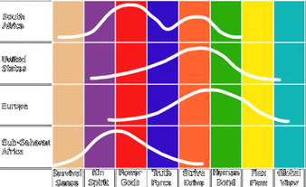

Культурная эволюция и межстрановые заимствования
Теория культуры. Культурные заимствования.Теории модернизации.Национальное сознание и ценности модернити. Критерии отбора образцов для заимствования.Культурная экспансия. Культурный протекционизм.
Введение
Мы живем в эпоху перемен. Мир вокруг нас меняется как никогда быстро, и более того, все говорит за то, что в будущем изменения станут происходить еще быстрее. Человечество стремительно эволюционирует, и процесс эволюционного развития захватил не только науку и технику, но и социальную сферу, сферу государственного и организационного устройства. Единицами развития являются инновации (открытия, изобретения). В экономической теории инновации понимаются как внедрение новых технологий, продуктов, форм индустриальной организации (согласно трактовке экономиста Йозефа Шумпетера).
Инновация - по сути, ни что иное, как новая идея. Она может проявляться в виде открытия или изобретения. Открытие -- это получение новых знаний о мире. Классический пример открытия -- это открытие новых островов и континентов, в частности Америки. Открытие предполагает, что факт, ныне известный, раньше был неизвестен. Оно снабжает человечество новыми знаниями, которые в процессе изобретения соединяются с известными знаниями и порождают новые элементы.
Изобретение -- новая комбинация известных культурных элементов или комплексов. Они включают новые способы изготовления предметов, технологии. Изобретения подразумевают не только технические и научные новации, но и социальные, например, создание новых форм государственного управления или способов организации коммерческой компании. Изобретения могут быть материальными, концептуальными, идеологическими и даже духовными.
Первое крупное изобретение человека -- превращение палки и камня в средство обороны от диких хищников, превосходивших человека агрессивностью и силой. Второе -- превращение оружия в орудия труда. По времени, возможно, второй процесс был продолжительнее первого. Третье крупное изобретение -- "приручение" огня. Затем технический прогресс пошел резко в гору и изобретения следовали одно за другим. Наиболее крупными инновациями считаются изобретения колеса, письменности и монотеистической религии.
Изобретения и открытия распространяются на другие культуры четырьмя основными способами:
· заимствования (целенаправленное подражание)
· навязывание (принуждение, как явное так и скрытое)
· диффузия (стихийное распространение)
· независимые открытия.
Последний путь означает, что одно и то же изобретение сделали независимо друг от друга в разных странах. Независимые изобретения -- открытие одних и тех же культурных черт или образцов в разных культурах как следствие действия одних и тех же потребностей или объективных условий.
Ярким примером независимого открытия служит неолитическая революция (переход от охоты и собирательства к земледелию, приручение животных и окультуривание злаков), которая произошла 7 тысяч лет назад в Месопотамии и 3 тысячи лет назад независимо от нее в Месоамерике (цивилизация майя).
Однако, культурную передачу специалисты считают более распространенным источником культурных изменений, чем независимое изобретение. Именно поэтому наибольший интерес для автора в рамках данной работы представляют первые три способа распространения инноваций: целенаправленные заимствования и навязывания, а также спонтанная диффузия.
Страна, которая заимствует чужое, называется страной-реципиентом, а страна, которая отдает свое, именуется страной-донором. Культурное новшество, которое заимствуется добровольно, как правило, ложится на частично подготовленную почву. Это означает, что в стране-реципиенте уже существуют группы или силы, заинтересованные в перенесении чужой инновации, готовые распространять, внедрять и защищать культурное новшество. При этом, выгоды от принятия культурного новшества должны перевешивать выгоды от его отвержения.
Однако, именно здесь и лежит основная сложность: на практике подсчитать плюсы и минусы часто не удается. Возможны лишь приблизительные и, как показывает история, очень грубые прикидки. Цель данной работы - разобраться с вопросами межстранового распространения социальных инноваций, а именно:
· Насколько процессы межстранового обмена являются управляемыми и/или спонтанными?
· Какие инновации являются наиболее привлекательными для заимствования?
· Каким образом лица, принимающие решения о заимствованиях знают, что лучшие инновации страны-донора также окажутся лучшими для страны-реципиента?
· Насколько могут быть успешны попытки одних стран навязать свои инновации другим?
В числе подходов, которые можно применить для решения поставленных задач можно назвать:
· Теории культурной динамики (Томас Кандо, и др.)
· Теории модернизации (Макс Вебер, Сэмюэль Хантингтон, Фрэнсис Фукуяма и др.)
· Меметика (Ричард Даукинс и др.)
· Общая теория систем (Л. фон Берталанфи, Томас Кун и др.)
· Холические подходы и интегральная теория (Клер Грэйвс, Кен Уилбер и др.)
Теория культуры
Культура и/или наука
Прежде чем приступить к рассмотрению теорий культуры, необходимо обозначить важное отличие между несколькими принципиально разными научными парадигмами, которые на сегодняшний день существуют и определить границы их применения. Кен Уилбер (Ken Wilber), американский философ, в 80-х годах прошлого столетия предложил модель для различения методологических подходов в зависимости от области познания бытия. Модель Уилбера предлагает деление в рамках двух дихотомий: "Индивидуальное-Коллективное" и "Внутреннее-Внешнее":
|
Внутреннее |
Внешнее |
|
|
Индивидуальное |
Интерсубъективное "Я" Личная духовность, внутренний мир, мысли и чувства Намеренное |
Интеробъективное "Оно" Естественно-научные дисциплины Поведенческое |
|
Коллективное |
Интрасубъективное "Мы" Искусства, коллективная религия, герменевтика Культурное |
Интраобъективное "Они" Макроэкономика, социология, кибернетика, теория систем Социальное |
Знание относительно "Оно" представляет собой хорошо знакомую классическую науку в рамках парадигмы логического позитивизма. Абсолютно объективную, эмпирическую, монологическую, базирующуюся на верификационной модели знания. Такая наука оперирует наблюдаемыми материальными объектами. Сюда относятся: физика, химия, биология, физиология, поведенческая (бихейвиоральная) психология.
Знание относительно "Мы", не оперирует материальными объектами, поэтому не может быть строго объективным. Вместо этого, такое знание будет оперировать концепциями, мнениями, толкованиями, сравнениями. К таким наукам относятся науки об искусстве, культуре и религии.
Знание относительно "Я", которое формируется на основании само-рефлексии, само-наблюдения, и обмена мнениями с другими людьми. Эта наука вообще не будет связана ни с какими объективными, наблюдаемыми снаружи вещами или процессами. Сюда будет относиться часть психологии, а также все остальные науки о человеке в той мере, в которой они полагаются на знания о внутреннем опыте.
Знание об "Они", в частности, экономика и социология, хотя и базируются на эмпирическом знании о коллективном поведении, тем не менее, неизбежно будут обращаться к категориям внутреннего опыта людей, а следовательно, также не могут быть "научными" в естественно-научном смысле этого слова.
Уилбер использует это различения для анализа процесса эволюции сознания. Например, в средневековье не существовало разницы между знанием "Я", "Мы" и "Оно", культура, наука и самоосознание были едины. Если кто-то выражал несогласие с существующей религией, он признавался не только еретиком, но и государственным преступником. Отлучение от церкви фактически означало отлучение от закона. В эпоху модерна три вида знания были разделены, однако, разделение привело к конкуренции между ними: церковь утверждает свое превосходство над наукой, наука - над церковью, а отдельный человек может теоретически не согласиться ни с теми, ни с другими без особенного риска для жизни. В итоге, это соревнование привело к победе науки (знании об "Оно") и построению техногенной цивилизации. Причина такой победы в том, что относительно эмпирического знания намного проще придти к соглашению, чем относительно внутренних, субъективных категорий.
В результате мы стали свидетелями чрезвычайно большого влияния парадигм науки об "Оно" на другие квадранты, сферы бытия ("сциентизм"), попытке основать школы "научной социологии" (Конт) или "научной психологии" (Скиннер), однако практическим успехом такие попытки не увенчались. Бихейвиористы далеко продвинулись в изучении поведения мышей и дельфинов, но в рамках психотерапии особых достижений не случилось. В рамках экономики, "естественно-научные" экономисты преуспели в построении математических моделей, но крушение социалистической экономики от Госплана показало, что эти модели как минимум далеки от совершенства.
Подробнее о пагубных последствиях интервенции сциентизма в общественные науки можно прочитать, например, в книге Фридриха Хайека "Контрреволюция науки" (http://www.libertarium.ru/libertarium/10181).
Кроме того, доминирование эмпирики привело к появлению крайних форм материализма, когда под ценностями понимались только материальные ценности. В то же время, совершенно упускались из виду нематериальные, культурные ценности. Подобно деньгам и материальным объектам, они также являются разделяемыми ценностями (то есть имеют ценность больше чем для одного человека), но имеют хождение скорее в рамках отдельных культур (будь то семейная культура, корпоративная культура или культура одной страны) чем по всему миру.
Если, находясь в рамках экономики, мы можем упускать из виду эти ценности, справедливо заявляя, что они не являются предметом изучения, то в рамках культуры упускать их - значит упускать самую суть. В рамках экономики, мы можем достоверно определить, ценность произведения искусства, основываясь на количественных, денежных показателях. В рамках культуры, кассовые сборы фильма мало скажут нам его о художественной ценности, а тираж книги - о ее влиянии на умы современников и уж тем более потомков. Экономист, пытающийся судить о культуре в рамках экономики будет похож на человека, который, по выражению Оскара Уальда, "знает цену всему, но не знает ценности ничего". В рамках культуры художественная ценность творений человека оценивается совершенно в других терминах, более того, ценность эта будет сильно отличаться в зависимости от того, какие ценности уже существуют в той или иной культуре на данный момент времени.
Оперируя в рамках культуры, нам неизбежно придется столкнуться с неприменимостью принципа методологического индивидуализма. Культура - явление принципиально коллективное, ключевой особенностью культуры является ее разделяемость - бессознательное принятие членами культурного сообщества ряда культурных пресуппозиций (в терминологии антрополога Грегори Бейтсона). Культурные пресуппозиции - подразумеваемые истины и ценности, относительно которых у членов одной культуры не возникает сомнений и разногласий. Именно общность таких ценностей создает каждую культуру как уникальный феномен, отличный от других культур.
Эдвард Тайлор, автор одного из первых антропологических определений культуры трактовал понятие культуры как "комплексное целое, которое включает в себя знания, верования, искусство, законы, мораль, традиции и любые другие способности и привычки, полученные человеком как членом общества" (Sir Edward Tylor, Primitive Cultures, 1871). Именно поэтому, в рамках культуры нам придется говорить об "обществе", "общественных ценностях", "общественной морали", "общественном мнении" и других концепциях, невозможных в рамках экономики.
Культура как система
В отличие от аналитической процедуры классической науки, исходящей из необходимости разложения объекта на составляющие элементы (редукционизм) и представления об однолинейных причинных цепях, системные исследования, то есть исследования организованных целостностей со многими переменными требует новых категорий - взаимодействия, регулирования, организации, телеологии, что, в свою очередь, ставит много новых проблем, относящихся к эпистемологии, математическому моделированию и аппарату. Теория систем изучает элементы системы во взаимосвязи, а сами системы - во взаимосвязи с другими системами, более низкого, высокого, или равного порядка. Вместо причинно-следственных связей в теории систем говорят о так называемых "петлях причинности", которые включают на себя как влияние одного элемента системы на другой, так и обратную связь.
Что такое система? Прежде всего, система - это абстрактная концепция. Поскольку во вселенной все элементы так или иначе взаимосвязаны (хотя сила связей весьма различается), провести четкую границу между двумя системами бывает весьма затруднительно. В этом смысле мы умозрительно допускаем, что человек является целостной системой на уровне организмов, но в то же время является частью большей системы под названием "биосфера".
В теории систем есть несколько важных принципов, которыми мы будем активно пользоваться далее:
1) Принцип холизма, запрет на рассмотрение частей целого по отдельности и как простой суммы.
2) Принцип выделения подсистем - без него невозможен анализ.
3) Принцип максимизации эффективности. Очень важным атрибутом системы является ее эффективность. В рамках теории систем доказано, что всегда существует функция ценности системы -- в виде зависимости ее эффективности (почти всегда это эмпирически наблюдаемый показатель) от условий построения и функционирования.
4) Обязательный учет внешних связей.
Человеческая культура представляет собой классическую систему со множеством подсистем. Более того, в настоящий момент, человеческая культура является самой сложной из известных нам целостных систем. Она находится на вершине иерархии систем "молекула-клетка-орган-организм-общество" (в данном случае речь идет об информационной, а не материальной иерархии). Поскольку данная иерархия представляет собой последовательную цепь из систем, каждая из которых включает в себя предыдущую подобно матрешкам, то есть в конечном итоге образует единое целое, о ней принято говорить как о холархии (холоархии). Артур Кёслер ввел в обиход слово "холон" - под которым понимается система, которая будучи целостной в одном контексте является частью большего в другом.
В этой связи важно, что одна система (например, некий культурный элемент, культура одной страны или региона) существует в рамках другой системы (общечеловеческой культуры), и между ними существуют петли причинности, как нисходящие, так и восходящие. Культурный элемент не приживется, если он будет конфликтовать с холоном более высокого порядка: он либо будет отторгнут, либо трансформирован, либо (будучи достаточно мощным) станет доминирующим, изменив под себя вышестостоящий холон.
В рамках данной работы, мне бы хотелось предложить следующую иерархию холонов (холоархию):
1. материальная культура, которая создается через
2. деятельность экономических агентов, которое определяется
3. культурными ценностями общества (культурным сознанием, культурными пресуппозициями), которые определяется
4. глубинными ценностями (см. главу "Эволюция глубинных ценностей")
Верхние уровни холархии в основном обладают определяющим значением. Материальная культура может вносить изменения в системы более высокого порядка, однако это возможно только если на более высоком уровне присутствуют элементы, поддерживающие данное материальное нововведение.
Термин "культурное сознание" (которое, впрочем, с равным успехом можно назвать культурным бессознательным) по сути является синонимом той самой пресловутой "национальной идеи". Правда, единое культурное сознание в рамках государства не всегда будет национальным - особенно, если государство образовано по многонациональному признаку. Таким образом, возникают новые, наднациональные культурные сущности, например, американская культура или советская культура. Однако, на этом уровне уже можно говорить о существовании таких понятий, как "американский народ" или "советский народ". Впрочем, это не исключает существования в рамках "советского народа" подсистем более низкого порядка, конфликтующих между собой. В дальнейшем термины "национальное сознание" и "культурное сознание страны" будут использоваться как синонимы, если не оговаривается отдельное.
Основным структурным элементом культурного сознания страны является ее "центральная зона" или мэйнстрим (в терминологии Э. Шилза), где аккумулируются основные ценности, верования, убеждения общества. "Центру" противостоит "периферия", в границах которой могут локализоваться оппозиционные и второстепенные, групповые и частные ценности. Как правило, "центральная зона" является основным источником развития законодательства и основным эталоном, по которому сверяются все культурные инновации, в том числе и правовые (подробнее см. главу "Особая роль законодательства").
Однако, далеко не все правовые ценности переводятся на рациональный язык законодательства. Многие ценности существуют и оказывают влияние на общественное поведение на уровне коллективного бессознательного и продолжают его оказывать - порой даже тогда, когда "официальные", рациональные правовые ценности вступают с ними в конфликт. Для России эта проблема стоит особенно остро. Традиционной русской культуре присущ так называемый морализм (противостоящий юридизму), хорошо выраженный в знаменитой сентенции: "Суди меня не по закону, а по совести". Основная причина этого - разрыв между ценностями "центральной зоны", которые разделяются большинством населения, и ценностями законодателей. В России, где аристократия на протяжении веков была "страшно далека от народа" это весьма характерно. Временное создание ценностного разрыва вполне допустимо, однако, он должен быть в кратчайшие сроки ликвидирован - либо с помощью механизмов правопринуждения, либо с помощью убеждения. Последнее, разумеется, предпочтительнее.
В приведенном ниже примере демонстрируется, как заимствованный элемент материальной культуры (ружья) в одной стране был подавлен "национальным сознанием", а в другой спровоцировал конфликт между двумя течениями в национальном сознании, один из которых в итоге победил.
В 1954 два путешественника из Португалии привезли в Японию первые ружья. Японский самурай, ставший свидетелем того, как один из португальцев подстрелил летящую утку, купил у них ружья и попросил своего кузнеца скопировать их. В течение следующих 10 лет Япония имела больше ружей на душу населения, чем какая-либо другая страна, а к 1600 году - в Японии изготовлялись лучшие ружья в мире. Несмотря на это, в течение следующего столетия Япония постепенно отказалась от ружей. Почему это произошло?
Причина в конфликте идеи ружей с системой более высокого порядка - культурой ведения войны. Дело в том, что культурная традиция тех времен предусматривала, что японская военная аристократия, самураи, во время боя сражаются между собой, а остальная часть армии, плохо вооруженные и необученные крестьяне - между собой. Действительно, у обычного воина не было шансов против самурая. Однако, ружья существенно уравняли шансы крестьян и самураев, таким образом, подвергнув опасности существование системы более высокого порядка. В результате, сначала производство ружей было ограничено путем лицензирования ста фабрик, затрем трех фабрик, затем было сказано, что три фабрики могут делать только сто ружей в год, затем десять в год, затем три, и в результате в 1840 году, когда европейцы заново открыли Японию, там не было ружей вообще.
Совершенно иным образом развивалась история в Европе - хотя в Европе точно также существовала военная аристократия, и она точно также была повергнута опасности существованием огнестрельного оружия. Однако в результате, рыцарство в Европе исчезло - а в Японии - победило (хотя бы на время). Почему? Дело в том, что Япония, как культурная система, была объединена под властью одного суверена, и к тому же, совершенно изолирована. Европейские государства, напротив, активно взаимодействовали с другими системами, другими государствами. Когда один европейский суверен запрещал ружья, его суверенитет тут же оказывался в опасности, поскольку его сосед подобной глупости не сделал. В результате, выбор был естественным образом сделан в пользу ружей, поскольку их наличие давало больше пользы, чем наличие рыцарской культуры боя, в которую они не вписывались.
В данном случае особенно важен факт системного взаимодействия между культурами - на сегодняшний день ни одна страна не существует в вакууме, даже в самых отдаленных уголках Земли существует контакт с цивилизацией. Внутренние культурные инновации будут постоянно конкурировать с инновациями из других стран, только если государство не устанавливает искусственных протекционистских барьеров. Однако, устанавливая законодательные ограничение, правительство обеспечивает не самой удачной идее выживание в рамках конкретной страны, лишая тем самым страну возможности создать более удачную идею, которая могла бы потенциально завоевать мир.
Важно отметить, что существует проблема различения между "страной", "правительством" и группами интересов или элитами, которые как часть общества воздействуют на власть. Правительства и их конкуренты утверждают варианты национальных ценностей, обычно связывая себя с властью заявлениями о своей преданности исторической правде, утверждениями о защите культуры, веры или традиционного образа жизни. Различие заключается в том, что для страны предметом обсуждения является его суверенитет, а для правительств и их конкурентов на карту поставлена власть.
Особая роль законодательства
Один из основоположников кибернетики, Н. Винер, определял законодательство как этический контроль над коммуникацией и языком как каналом коммуникации, подчеркивая в то же время поведенческую направленность законодательства: "Право представляет собой процесс регулирования "связок" (couplings), соединяющих поведение различных индивидуумов, в целях создания условий, в которых можно отправлять так называемую справедливость и которые позволяют избежать споров или по крайней мере дают возможность рассудить их".
Ключевым понятием в области права является понятие справедливости, абсолютно невозможное в рамках экономики (хотя попытки перенести его в экономику постоянно присутствуют, и, видимо, продолжатся и впредь). В рамках экономики речь не может идти о справедливой зарплате или справедливых ценах - справедливыми считаются те цены и ставки, относительно которых стороны договорились без физического принуждения.
В рамках культуры, однако, может возникнуть конфликт на уровне ценностей, когда то или иное действие экономического агента может оказаться "несправедливым", хотя и абсолютно обоснованным экономически. Например, если в обществе существует ценность "не дадим бедным людям страдать", которое находит выражение через законодательно закрепленное "право на бесплатное медицинское обслуживание".
Право всегда возникает в обществе как элемент культуры, как психосоциокультурная подсистема, которая имеет знаковый (текстуальный), ценностный и деятельный аспекты. С позиций семиотики, культура выступает как коммуникативная деятельность по созданию, воспроизводству и сохранению ценностно значимых текстов - законодательство как раз и является такого рода текстами. В этом смысле, законодательство, как и культура - явление интерсубъективное, результат непрерывной человеческой коммуникации. Поэтому законы страны невозможно понять вне ее культурного контекста.
В то же время, законодательство является вербализованным, конкретным и, чаще всего, применимым отражением национального сознания. В отличие от эфемерного сознания, законодательство - это ориентир, маяк для любого жителя страны или иностранного гражданина, который собирается вступать в какие-либо социальные контакты, будь то торговля или прогулка по улице. Роль законодательства трудно переоценить - именно им в первую очередь определяется поведение экономических субъектов, если неписаные моральные кодексы могут быть нарушены без очевидных последствий, то за соблюдением законодательства, как правило, следят правоохранительные органы и судебная власть.
Как пишет Генри Стил Коммаджер в книге "Империя Разума" (Henry Steele Commager, The Empire of Reason): "Американцы не только сохранили принципы Возрождения, но записали их в закон, кристаллизовали их в общественные институты, заставили их работать. Именно в этом состояла американская революция, в не меньшей степени, чем в завоевании независимости и в создании нации". В приведенном выше примере ружья были "выжиты" из Японии именно с применением законодательного принуждения, а не простым общественным игнорированием технологии.
В настоящее время, в мировой правоведческой традиции существует три основные теории генезиса права: правовой позитивизм, теория естественного права и историческая школа. Кроме того, в связи с модой на интегральные подходы постепенно намечается зарождение четвертой, интегральной школы. Так, например, Г.Дж. Берман пишет в своем фундаментальном исследовании "Западная традиция права: эпоха формирования":
"Интегрированная юриспруденция - это философия, объединяющая три классические школы: правовой позитивизм, теорию естественного права и историческую школу. Она основана на убеждении, что каждая из этих трех конкурирующих школ выделила одно из важных измерений права, исключив прочие, и что совмещение нескольких измерений в одном фокусе, во-первых, возможно, и, во-вторых, важно... Эти три конкурирующих подхода можно примирить только путем более широкого определения права, чем те, что приняты каждой школой в отдельности. Позитивисты чаще всего определяют позитивное право (а никакого другого права они не признают) как официальные нормы или, в случае "американских правовых реалистов", как официальные модели поведения, рационализированные нормами или скрытые в них. Большинство приверженцев теории естественного права также определяют позитивное право как нормы, но поверяют их принципами или стандартами морали, которые они считают равноценной частью права. "Истористы" тоже определяют право как сочетание норм и принципов морали, но - в отличие от позитивистов - придают большее значение нормам обычного права, чем нормам законодательства, а в отличие от "естественников" их больше волнуют не универсальные, а конкретные моральные принципы, соответствующие характеру и традициям народа или общества. Профессор Джером Холл, который изобрел термин "интегрированная юриспруденция" ... относится к этим определениям права с уважением, но дает определение более широкое, чем все три вместе взятые. Он определяет право как тип социального действия, процесс, в котором нормы, ценности и факты - и то, и другое, и третье - срастаются и актуализируются... На мой взгляд, именно актуализация права является его наиболее существенным признаком. Если определить право как деятельность, как процесс законотворчества, судебного рассмотрения, правоприменения и других форм придания правового порядка общественным отношениям через официальные и неофициальные модели поведения, то его политический, моральный и исторический аспекты могут быть сведены воедино..."
Таким образом, далее мы будем понимать право (и его текстуальное выражение - законодательство) в качестве непрерывной череды актуализаций, проверок реальностью, процесса, целью движения которого является наилучшее соответствие постоянно меняющейся социокультурной "центральной зоне". При этом, движение идет из прошлого, откуда непрерывно тянется поток наследованных правовых норм.
Идеологизация законодательства
Среди части юристов принято считать, что законодательство ни в коем случае не должно быть идеологизировано, поскольку в таком случае оно неизбежно вступит в конфликт с практической целесообразность. Однако, это проблема идеологии, а не законодательства. Действительно, советская идеология, на которой было основано советское законодательство (а также советские модели экономического поведения и в конечном счете, советская материальная культура), потерпела крах в конкуренции с идеологией Запада. Но вместе с тем, наиболее успешные государства основывают свое законодательство именно на идеологии: классическим примером является США, где слово "свобода" - не пустой звук, а принцип, вокруг которого построена конституция.
Великобритания с идеей "бремени белого человека" стала крупнейшей колониальной державой. Послевоенное правительство Японии, провозгласившее на уровне национальной идеи "контроль качества" добилось на этом поприще удивительных успехов. С другой стороны, Северная Корея и Куба, сохраняющие приверженность идее социальной справедливости и равенства тоже добились больших успехов - за вычетом партийной номенклатуры, люди там достаточно близко стоят друг к другу по уровню материального положения. Аналогичные механизмы действуют в мире бизнеса - невозможно создать успешную компанию, не имея успешной идеи, пусть даже не своей, а заимствованной.
Проблема идеологизации законодательства имеет прямое отношение к классическому спору о методах, который положил основание для австрийской экономической школы.
Спор о методах (Methodenstreit) -- полемика по методологическим вопросам между австрийскими экономистами (прежде всего К. Менгером) и представителями новой (молодой) исторической школы (Г. Шмоллер). Начался с публикации К. Менгером "Исследования о методах общественных наук", где он говорил о точном методе исследования, с помощью которого экономическая теория может быть расчленена на свои простейшие элементы, а истории и социологии отводилась вспомогательная роль. По мнению Менгера, эмпирический материал играет вспомогательную роль в экономическом исследовании. Исторический метод исследования характеризовался при этом как чисто описательный. Менгер придерживался точки зрения Берка относительно непланируемого развития общества и отвергал мнение о том, что экономическое развитие может направляться с помощью законодательства. Все эти утверждения посягали на самые основы исторической школы. С резким ответом Менгеру выступил Г. Шмоллер. Менгер в свою очередь выпустил памфлет "Ошибки исторической школы в немецкой политической экономии". Постепенно дискуссия выродилась в личные нападки. "Спор о методах" "завершился" тем, что Шмоллер заявил: последователи "абстрактной" австрийской школы не соответствуют требованиям, предъявляемым к преподавателям в немецких университетах. Шмоллер был достаточно влиятелен и смог навязать такой запрет.
Людвиг фон Мизес, "Человеческая деятельность" (Ludwig von Mises, Human Action).
По всей видимости, точка зрения Менгера противоречит сама себе - если общественное развитие нельзя направлять с помощью законодательства, то никакие реформы на государственном уровне невозможны в принципе, все бесполезно. Общественное развитие можно направлять законодательством в том смысле, что теоретическая возможность этого существует, нужно ли это делать - другой вопрос. Если мы согласимся, что общественное развитие нельзя направлять законодательством, то, как это ни парадоксально, прежде всего нам необходимо будет произвести законодательную реформу, сведя количество законодательства к минимуму. Собственно, ряд стран вполне успешно следуют в этом направлении, постепенно отменяя регулирующие законы, принятые во второй половине прошлого века.
До 90-х годов прошлого века экономика Перу была одной из наиболее медленно растущих в регионе, большая часть населения страны официально находилась за чертой бедности. И вот в 1990 году институт ILD (Instituto de Liberdad y Democracia) провел масштабные исследования, в результате которых выяснилось, что основная причина стагнации экономики заключается в том, что 60-80% населения страны являлись частными предпринимателями, живущими за пределами юридической системы страны - из за чудовищной сложности и забюрократизированности последней. Они не были бедны, однако большая часть их имущества не была нигде зарегистрирована. С 1947 года в Перу было принято более 700 тысяч (!) новых законодательных актов. Согласно местной юридической системе, в среднем требовался 21 год чтобы получить разрешение на строительство дома. В результате, дома строились нелегально. В результате, их нельзя было использовать в качестве вклада в уставной капитал, залога по кредиту, и так далее. Осознав этот факт, исследователи написали книгу под названием "Другой Путь". Книга стала бестселлером не только в Перу, но и в других странах Латинской Америки. По сути, книга проникла в официальную идеологию, стала руководством к действию для правительства, которое в начале 90-х годов произвело юридическую реформу, резко сократившую количество законов и послужившую причиной бурного экономического роста.
Идеология представляет собой разновидность ценностного знания, то есть знания, основанного на ценностных предпочтениях. Законодательство также является ценностным явлением - его значимость в рамках социума является эмпирическим и, соответственно, верифицируемым фактом. Идеологизации законодательства невозможно избежать - по крайней мере до тех пор, пока существует само законодательство. Основы государственной идеологии так или иначе заложены в конституции. Вопрос заключается только в правильном выборе этой идеологии, ценностей.
Критерии отбора образцов для заимствования
Поиск образцов для заимствования на уровне законодательства определяется в первую очередь более высоким уровнем холархии. От политиков можно часто слышать: "давайте не будем брать за модель Америку, давайте возьмем лучше Францию". Или Швецию. То есть предлагается скопировать то или иное законодательство с законодательства другой страны, которая, как нам кажется, с этой конкретной проблемой справилась и вообще добилась больших успехов в своем развитии. Скорее всего такая фраза будет означать, что, на уровне личных симпатий культура Франция является для говорящего более привлекательной, чем культура США. При таком подходе невозможно скопировать пусть удачный опыт "непопулярной" страны. Любые попытки скопировать передовой опыт Пакистана (даже если он действительно передовой) будут скорее всего восприняты "в штыки". Нет, в самом деле, мы же не хотим жить как в Пакистане?
Другой вариант определяющей холархии - язык. Язык является чрезвычайно мощным культурным фильтром, человек, владеющий английским языком будет с большей вероятностью отбирать для заимствования образцы из англоязычных стран.
Самая большая проблема, собственно, с копированием. Идея сама по себе чрезвычайно привлекательная, действительно, зачем изобретать велосипед? Проблема, однако, в том, что буквальное копирование конкретных поведенческих моделей и законодательства часто приводит к негативным результатам: "имплантированные" элементы другой культуры оказываются действительно чуждыми, не подходящими в актуальном культурном контексте, не выполняющие своих функций. Результат: специалисты, которые нигде не могут применить свои знания (потому что "у нас же все по-другому"), законы, которые систематически не исполняются - а если и исполняются, то становится только хуже. Кроме того, копируя чужие образцы мы лишаем себя возможности создать что-то новое, более совершенное.
Здесь проявляется "синдром догоняющей страны": мы заранее рассматриваем моделируемый образец как некую конечную точку Б, куда надо попасть. Однако к тому времени, как мы туда попадем, оригинал продвинется вперед - таким образом, мы будем обречены на вечное преследование. К сожалению, заимствование часто бывает оправдано по экономическим соображениям - скопировать законодательство бывает дешевле, чем разработать свое. И в этом случае, имеет смысл моделировать в первую очередь не поведение и не законодательство, а верхний уровень, идеологию, принципы. Часто уже на этапе оценки принципов становится ясно, что предлагаемый образец для заимствования совершенно не подходит - потому что с самого начала построен на других идеях и ценностях.
Наиболее успешные государства были созданы вокруг великих идей. Причем идеи были не просто найдены, но кристаллизованы в законах страны. Чтобы перестать догонять и начать лидировать, необходимо создать - или, скорее, осознать - те идеи, которые смогли бы повести страну в желаемом направлении. Это не должны быть цели вроде конечной точки ("удвоение ВВП в этом смысле" - хорошая цель, но никудышная идеология), это должны быть скорее правила движения (guidelines), вектор, нечто, задающее направление. Я не случайно написал "осознать" - будет хорошо, если эти идеи, хотя бы в какой-то форме, хотя бы частично, присутствуют в "центральной зоне" общественного сознания, в российском ментальном мэйнстриме. В этом случае существенно снижается риск отторжения инноваций.
Эволюционная парадигма - отбор идей
В отличие от материального (которое, как известно, не возникает из ничего и не исчезает) перед идеальным остро стоит проблема существования. Идеи, концепции, информация, не способные сохраняться в материи, исчезают, а эту материю захватывают другие идеи. Именно поэтому вся история Вселенной является историей борьбы информации за обладание материей. Классической иллюстрацией этого является биологическая эволюция, в которой информация ДНК биологического вида тиражируется (или не тиражируется, если информация неудачна) в миллионах живых существ. В природе имеет место естественный отбор - выживают только наиболее приспособленные к внешнему окружению виды.
Индивиды и общества, которые имеют ложное знание об окружающей их среде, обречены на исчезновение и вытеснение их носителями адекватного знания. Таким образом, в процессе возникновения и приобретения знания наблюдаются процессы, аналогичные биологическим процессам приспособления и отбора.
Например, идея греческая военного построения фалангой побеждала при столкновении с неорганизованной пехотой варваров. Убедившись в эффективности фаланги на примере греков, эту идею восприняли македоняне.
Это - пример непосредственного, очевидного отбора. Однако, в сложных системах, таких, как современное общество, отбор идей чаще всего происходит опосредованно, с участием многих промежуточных ступеней и без прямого силового столкновения. Что же является критерием, пользуясь которым общество принимает или отвергает ту или иную идею? В самом общем смысле можно сказать, что это отношение полезности этой идеи для самовоспроизводства всего общества в целом (то есть, для овладения материей) к затратам энергии на воспроизводство самой идеи.
Возможно, впервые аналогия между естественным отбором и отбором идей была описана Карлом Поппером в работе "Рост научного знания". В 1976 году профессор биологии из Оксфорда Ричард Даукинс в своей работе "Эгоистический ген" (Richard Dawkins, Selfish gene) впервые предложил концепцию репликатора в приложении к социокультурным процессам, которая более детально была им описана в его следующей работе "Расширенный фенотип". Даукинс ввел понятие "мема" (meme), используемого им для описания процессов хранения и распространения отдельных элементов культуры. В эти же годы Ламсденом и Вильсоном была предложена концепция культургена. Данная концепция способствовала закреплению аналогии между механизмами передачи генетической и культурной информации.
Распространение идей происходит по двум основным направлениям: вертикально и горизонтально. Вертикальная передача - это наследственная передача, когда человек получает те или иные идеи "в наследство" от предшественников, родителей, воспитателей, через устную передачу, книги, или другие культурные артефакты. Современный человек не рождается в культурном вакууме, ему нет нужды открывать заново все инновации предшественников.
Горизонтальная передача - передача идей от человека к человеку и от культуры к культуре. Выделяют четыре основные критерия прохождения отбора идеями:
· культура (человек) должна созреть для заимствования данных идей, как на уровне идеологическом, так и на уровне технологий;
· новые элементы способны интегрироваться в сложившуюся в обществе (внутри человека) культуру, не угрожая ее разрушить;
· доминирующая в стране (внутри человека) идеология не запрещает заимствование новых элементов как "враждебных", "чуждых", "плохих";
· члены общества (человек) считают, что в новых элементах есть необходимость, что издержки от внедрения идеи будут меньше, чем потенциальная выгода.
Эволюция представляет собой непрерывный процесс ветвления иначе известный как дивергенция. В зависимости от небольших возмущений на определенных точках развития системы (точках бифуркации), путь ее может разветвляться и идти далее по расходящимся ветвям. В рамках эволюционной парадигмы социальная трансформация может рассматриваться, как попытка перейти с одной ветви эволюции на другую, или, правильнее сказать, резко изменить направление своей ветви, приблизив ее к другим, более привлекательным по некоторым соображениям, ветвям. Социальная трансформация возможная только потому, что люди, в отличие от животных, обладают уникальной способностью эволюционировать целенаправленно. Животное не может намеренно отрастить себе более длинные когти или более плотную шкуру - человек может создать своим трудом огромное разнообразие желаемых вещей.
Споры вокруг теорий социальной эволюции
Теория отбора идей приводит нас к теории социальной эволюции - теории, которая является предметом давнего научного спора внутри сообщества культурологов, антропологов, социологов и экономистов.
В конце 19-го века Герберт Спенсер (Herbert Spencer) разработал одну из первых теорий "социальной эволюции", в которой утверждалось, что общества прогрессируют и что прогресс происходит через процесс соревнования, конкуренции. Приблизительно в то же время, что и Спенсер, Карл Маркс сформулировал свою теорию о стадиях развития общества, в которой утверждалось, что двигателем социальной эволюции является классовая борьба и обосновывалась неизбежности наступления социализма.
Как и многочисленные теории модернизации (см. ниже), теории социальной эволюции опираются на методологическое допущение, называемое "методологическим универсализмом". Развитие всех стран в рамках этих теорий рассматривается как универсальное, то есть происходящее в одном направлении, имеющее одни и те же стадии и закономерности. Такое развитие именуется "социальным прогрессом". В этом потоке культурное своеобразие каждой страны отступает на второй план (хотя его наличие признается). В общем, традиционные теории универсальной (unilinear) социальной эволюции характеризуются следующими тремя отличительными чертами:
1. Современные общества классифицируются по определенной шкале, от "первобытных" до "развитых" ("цивилизованных").
2. Существуют четкие, дискретные стадии развития от "первобытного" до "цивилизованного".
3. Все общества проходят через все стадии в одном и том же порядке.
Такие теории характерны для периода, известного как "модерн", для которого характерным было понимание "прогресса" непрерывной череды достижений науки и развития материальной культуры. Пожалуй, пик эпохи модерна пришелся на 18-й век, когда мыслители эпохи Просвещения обосновали необходимость в более "современном" обществе, основанном на принципах рациональности, прогресса, свободы вероисповедания. Примерно в это же время были открыты универсальные законы: физика Ньютона, теория Дарвина, периодическая система Менделеева. Эпоха модерна характеризовалась доминированием интраобъективной парадигмы (правый верхний квадрант, "Оно"), предполагалось, что вскоре универсальные естественно-научные законы полностью заменят собой заповеди церкви в качестве оснований для организации общества.
Критика со стороны постмодернизма
Закат модернизма был обусловлен появлением новых философских веяний: релятивизма, субъективизма и плюрализма. Наиболее яркими представителями философии постмодерна считаются Мартин Хайдеггер, Жак Деррида и Людвиг Виттгенштейн. Основной постулат - мир является не объективной реальностью, а культурно-детерминируемой субъективной интерпретацией (переход из правого верхнего квадранта в левый верхний, от интраобъективного в интерсубъективное). Следствием этого стало отрицание каких бы то ни было объективных, универсальных истин.
Некоторые исследователи (например, социолог Энтони Гидденс) считают, что термин "постмодернизм" относится, главным образом, к стилям или направлениям в литературе, живописи, скульптуре и архитектуре. Отрицая правомерность распространения постмодернистской доктрины на сферу экономики, политики и социальных отношений, Гидденс, как, впрочем, и некоторые другие западные теоретики, прибегают для ее обозначения к близким по звучанию, но несколько иным по содержанию понятиям "модернити" и, соответственно, "постмодернити" (см. ниже главу "Теории модернизации").
Однако, в любом случае, "постмодернити" в его интерпретации означает множество признаков современной эпохи, среди которых и те, "что ничего нельзя знать наверняка, поскольку стала очевидной ненадежность всех прежних "оснований" эпистемологии; что история лишилась телеологии, и, следовательно, никакую версию "прогресса" нельзя убедительно защищать..."
Видный теоретик постмодерна, французский философ Жан-Франсуа Лиотар (Jean-Franзois Lyotard) считал отличительным признаком этого периода утрату метаповествованиями (metanarratives) современности своей легитимирующей силы. Под "великими метаповествованиями" он понимает главные идеи человечества: идею прогресса, эмансипацию личности, представление Просвещения о знании как средстве установления всеобщего блага, поступательное расширение и увеличение свободы, развитие разума, освобождение труда, прогресс капиталистической технологии и науки. Таким образом, больше не существует универсальных стандартов, по которым культура одной страны может быть более или менее "примитивной" или "цивилизованной", и что Запад занимается тем, что навязывает свои культурные стандарты всему остальному миру.
Постмодернизм, доминирующий в современной антропологии, справедливо указывал на такие недостатки модернизма, как евроцентризм и монокультуризм, однако в результате скатился в банальное обожествление культуры племенных обществ. По неясным до конца причинам, для постмодернистов необычайно привлекательным оказался образ "благородного дикаря", живущего в "гармонии с природой".
Опрос, проведенный среди антропологов, результаты которого были опубликованы в 2002 году в журнале Harper's Magazine, показал, что все без исключения опрошенные скорее предпочли бы жить в племенах доколумбовой Америке, чем в Европе 15-го века.
По сути, на этом этапе постмодернизм превратился анти-модернизм, призывающий к возврату в эпоху пре-модерна (что, очевидно, невозможно). Такую разновидность постмодернизма принято называть деконструктивизмом, или деконструктивным постмодернизмом. На почве деконструктивизма расцвели такие направления в современной политике, как энвайронментализм и антиглобализм, стремящиеся повернуть вспять развитие цивилизации. Современные сторонники социального государства (welfare state) и политики левого толка также, как правило, используют постмодернистскую риторику.
Критика со стороны экономистов
Австрийская экономическая школа также традиционно критиковала теорию стадий развития, однако по другим основаниям. Например, Людвиг фон Мизес в своей фундаментальной работе "Социализм" (http://www.libertarium.ru/libertarium/l_lib_socialism3) пишет, что:
Догма, разделяемая многими историками, утверждает, что тенденции социальной и экономической эволюции, проявившиеся в прошлом, и особенно в недавнем прошлом, будут также существовать и в будущем. Поэтому изучение прошлого, заключают они, раскрывает характер событий, который произойдут в будущем. Оставляя в стороне все метафизические представления, обременяющие эту философию тенденций, мы лишь должны осознать, что тенденции могут изменяться, изменялись в прошлом и будут продолжать изменяться в будущем . Сторонник историзма не знает, когда произойдет следующее изменение. Все, что он может сказать о тенденциях, относится только к прошлому и никогда -- к будущему. ... Утверждение, что любая цивилизация должна пройти последовательность неизбежных стадий, ничем не обосновано.
Мизес предполагает, что единственным возможным основанием для эволюционной теории может быть историзм. Вместе с тем, он не отрицал существования эволюции идей:
Экономисты всегда отдавали себе отчет в том, что эволюция идей -- медленный, требующий много времени процесс. История знания -- это описание последовательных шагов, совершаемых людьми, каждый из которых что-то добавляет к мыслям его предшественников. Не удивительно, что Демокрит из Абдер не разработал квантовую теорию или что геометрия Пифагора и Евклида отличается от геометрии Гильберта. Никто никогда не предполагал, что современники Перикла могли бы создать философию свободной торговли Юма, Адама Смита и Рикардо и превратить Афины в центр капитализма.
Конструктивный постмодернизм и эволюция
Альтернативной деконструктивизму является конструктивный или ревизионерский постмодернизм, который также стремится преодолеть модернизм, но не путем деконструкции, а путем конструирования постсовременного мышления, посредством пересмотра предпосылок модернизма. В противоположность чисто негативистским движениям, конструктивный постмодернизм исходит из того, что современная эпоха привела к позитивным достижениям, от которых мы не должны и не сможем отказаться. Такой постмодернизм предполагает является интеграционным течением и считает своей задачей построение нового единства научных, этических, эстетических и религиозных предпосылок.
Конструктивный постмодернизм не отрицает субъективизма и различий в восприятии реальности разными людьми, однако считает, что люди имеют и достаточно много общего, универсального. Например, придется признать универсальность постулатов постмодернизма: того, что все люди интерпретируют реальность, что все знание контекстуально-зависимо и что интерсубъективизм, культура, является скорее объединяющим, чем разъединяющим началом.
Реформированная теория стадий развития отныне берет свои основания не в истории культур (которая является всего лишь интерпретацией), а в психологии, в стадиях индивидуально развития человека. Вместо наблюдений за особенностями общественного устройства, наблюдения ведутся за эволюцией индивидуальной этики и морали.
Во второй половине 20-го века появилась масса теорий, описывающих индивидуальную эволюцию сознания исходя из наблюдаемых, эмпирических данных. Пиаже (Piaget) наблюдал за когнитивной линией развития, Кольберг (Kohlberg) - за моральным развитием, Левингер (Loevinger) - за развитием самосознания, Маслоу (Maslow), автор знаменитой "пирамиды Маслоу" - за развитием потребностей, Грэйвс (Graves) - за развитием системы ценностей. Некоторые исследователи присваивали стадиям номера (моральный уровень 1, моральный уровень 2), некоторые - названия (конвенциональный, пост-конвенциональный уровень), некоторые - цвета (красный, желтый).
Было замечено, что большинство людей в своем развитии проходят через определенные стадии, причем некоторые проходят дальше, а некоторые "застревают". Исследования в культурах, отличных от культуры Запада показали, что для людей в них характерны те же стадии, с той лишь разницей, что в менее развитых культурах большая часть населения находится на более ранних стадиях развития (хотя это не исключает появления в этих культурах отдельных мыслителей более высокого порядка).
Каков критерий более высокого порядка? Основным критерием является относительная сложность системы. По мере эволюционного развития системам свойственно усложняться. История общества сама по себе сопровождалась ростом сложности примерно в миллион раз. Если примитивные общества могут состоять из сотен или тысяч человек, то современное общество не может существовать при числе членов менее 100 миллионов, причем в последнее время и этого количества становится явно недостаточно для реализации наиболее сложных технологий.
Стоит особенно отметить, что в системах накапливается на произвольная сложность, а сложность, которая позволяет системе более эффективно функционировать в рамках внешней системы. Для животного это будет экосфера, для человека - общество, а для страны - совокупность других стран, с которыми налажены культурные связи.
Что дает основания провести аналогию между стадиями индивидуального развития и общественными стадиями? Дело в том, что сознание как уже отмечалось выше, сознание человека является культурно-обусловленным, в обществе действуют механизмы наследования уровня мышления, вертикальной передачи идей. Каждое следующее поколение наследует идеи предыдущего, что дает ему возможность легче перейти на следующий уровень своего развития. Таким образом, если сегодня мы видим, как отдельные индивиды развиваются в то, что нам кажется более сложными и высокими стадиями, мы можем предположить, что все общество в дальнейшем последует за ними.
Эволюция глубинных ценностей
В 1970-90-х годах американский психолог Клер Грэйвс (Clare W. Graves, по адресу http://www.clarewgraves.com/ находится коллекция его научных работ), а затем его последователи, Крис Коуэн (Chris Cowan), Дон Бек (Don Beck) и уже упоминавшийся Кен Уилбер разработали новую социально-эволюционную теорию, названную впоследствии теорией спиральной динамики. Эта эволюционная теория была выбрана среди многих других, так как, по моему мнению, она наиболее полно описывает возможные ступени эволюции развития как человека, так и общества. По адресу http://www.clarewgraves.com/theory_content/compared/CGcomp1.htm опубликована таблица, в которой приводится сравнительный анализ теории Грэйвса и еще 25 психологических эволюционных классификаций, в том числе по Маслоу, Пиаже и других. Анализ показывает, что теория Грэйвса является наиболее полной и включает в себя все остальные, более ранние теории.
Уровни развития в теории Грэйвса описываются через парадигмы сознания (которые для удобства кодируются различными цветами от бежевого до желтого). Эти парадигмы сознания, или ценностные комплексы, включающие в себя духовные верования, культурные идеи, моральные принципы, модели обучения и т.д. возникают по мере возникновения потребности в них в процессе социокультурной эволюции.
Каждая очередная стадия развития удовлетворяет потребности, которые не были удовлетворены (или подавлялись) предыдущей ступенью развития цивилизации. Принципиальное отличие от социального дарвинизма здесь заключается в холическом подходе - каждый следующий уровень развития общества в ней рассматривается как очередной уровень холархии, включающий в себя предыдущий. В итоге, высшие уровни развития общества не отрицают, а включают в себя предыдущие.
Согласно теории спиральной динамики, на верхнем уровне культурной холархии существуют так называемые ценностные мемы высшего порядка - в английской терминологии vMeme (далее - цМемы). Каждый цМем представляет собой систему ценностей, которая в конечном итоге вызывает определенные верования, социальные группирования, паттерны мотивации, организационную динамику, цели. Если мы искусственно пытаемся привнести в общество решения или структуры, соответствующие цМему, отличному от того, на котором находится общество, они будут отторгнуты. Модель является иерархической, то есть цМемы в ней идут в порядке нарастающей сложности, но при этом открытой, то есть конечная точка неизвестна. На сегодняшний день описаны восемь уровней холоархии, которые представлены ниже.
1) Бежевый - автоматическое, инстинктивное мышление.
Уровень каменного века, не особенно распространенный сегодня на планете. На этом уровне доминируют инстинкты выживания, человек ведет себя в целом как животное, хотя и самое умное. Социальная организация: небольшие племенные группы.
Этика: отсутствует. Этично то, что способствует выживанию.
Современные примеры: новорожденные и очень старые люди.
Предпосылки к переходу на новый уровень: осознание себя как личности, постижение причинно-следственных связей, озабоченность выживанием, которое требует группового взаимодействия.
2) Фиолетовый - анимистичное, племенное.
Анимистическое, магическое, приземленное мышление. Индивидуум подчиняется интересам группы. Акцент на групповых ритуалах и поклонению духам. Кровные связи очень сильны. Сильная власть шаманов/вождей.
Этика: этично все, что идет на пользу племени.
Современные примеры: племена Африки.
Предпосылки к переходу: появление доминантного эго, личности, которая сильнее группы, ограниченность ниш для существования.
3) Красный - эгоцентричное, силовое.
Жесткий авторитаризм, проявляется в рабовладельчестве или подобных формах эксплуатации неквалифицированной рабочей силы. Власть через лидера и нескольких вассалов (двухуровневая модель). Убеждение, что люди ленивы и их нужно заставлять работать. Настоящие лидеры подавляют в себе человеческие эмоции. Характерен для ранних государств.
Этика: сильный прав.
Современные примеры: уличные банды, африканские королевства.
Предпосылки к переходу: признание власти морали, поиск смысла и цели жизни, увеличение дальности планирования.
4) Синий - абсолютистское, священное.
Патриотичное мышление, единственно верный способ думать, подчинение власти, навязывание чувства вины за несоответствие групповым нормам, самопожертвование во имя высшей цели. Активная защита "своих" от посягательств "чужих". Хорошо работает в индустриальных экономиках. Появление сложных иерархий. "Мыслить локально - действовать глобально".
Этика: религиозная или квази-религиозная.
Современные примеры: пуританская Америка, конфуцианские китайские семьи, исламские государства.
Предпосылки к переходу: поиск лучшего выбора из многих альтернатив, поиск счастья в этой жизни, обнаружение ошибок церкви/руководства.
5) Оранжевый - материалистическое, ориентированное на достижения.
Рационализм, частное предпринимательство во имя собственного блага, экономическая мотивация, конкуренция улучшает производительность и качество товаров, способствует росту. Возможно, доминирующий цМем в современной Америке. "Мыслить локально - действовать локально".
Этика: светский закон превыше всего.
Современные примеры: "капиталисты" США, Западной Европы.
Предпосылки к переходу: обнаружение того, что материальное благосостояние не приносит счастья, обновленное чувство коллективизма, недовольство конкуренцией и неравенством.
6) Зеленый - социоцентрическое.
Акцент совместном росте, равенстве, гуманизме, толерантности, стабильности, внимании к вопросам окружающей среды. Мотивация - человеческие отношения и обучение. Ценятся открытость и доверие, а не конкуренция. Лидера становятся менее автократическими, иерархии размываются. Эффективность падает, наступает стагнация. "Мыслить глобально - действовать глобально".
Этика: законы важны, но они должны служить благосостоянию всех.
Современные примеры: социальные государства Европы, Гринпис, левое движение.
Предпосылки к переходу: слишком высокая стоимость коллективных решений, необходимость в видимых результатах и функциональности.
7) Желтый - системное, интегрирующее.
Мотивация обучением, акцент на росте, изменениях, вызовах. Системное мышление, экология уходит на второй план (но сохраняется), на первых план выходит эффективность системы. Признание ценности хаоса и самоорганизации. "Мыслить глобально - действовать локально".
Этика: этика является предметом договора между людьми, а не государства.
Современные примеры: компании высокотехнологичного сектора.
Предпосылки к переходу: поиск порядка в хаосе, поиск направляющих принципов, соединение духовности и физики.
8) Бирюзовый - глобалистское, модернизаторское.
Синергетическое, голографическое мышление, возможность в полной мере видеть достоинства и недостатки предшествующих уровней, интегрируя их в единую целостность.
Современные примеры: теория Гайи, "глобальная деревня", идея плюралистической гармонии Ганди.
Важной особенностью данной модели является то, что каждый нечетный уровень является ориентированным преимущественно на индивидуальные ценности, а четный - на коллективные (кроме последнего, где коллективные и индивидуальные ценности находятся в гармонии). Таким образом, значение культуры, коллективного субъективного будет особенно велико на "фиолетовом", "синем", "зеленом" уровне. Наоборот, на "красном" будет наблюдаться отчетливый приоритет силы, на "оранжевом" - денег и индивидуальных свобод, на "желтом" будет присутствовать вера в способность общества к самоорганизации, к урегулированию конфликта между интерсубъективным и интеробъективным ненасильственными способами.
Как правила, общества неоднородны по меметическому составу, причем, чем более развитое, сложное общество - тем большее в нем существует разнообразие уровней. Уровни не сменяются за одну ночь, и не представляют собой ступеньки лестницы, они ведут себя скорее как накатывающиеся волны, каждая следующая волна сложнее предыдущей. На рисунке ниже представлена распространенность цМемов относительно некоторых регионов Земли.

По оценке Бека и Коуэна, 10% населения Земли находится на "фиолетовом" уровне, 20% - на "красном" и 40% - в "синем". Остальные 30% населения рассредоточены по "оранжевому" и "зеленому", с редким заходом в "желтый" и выше.
Процесс перехода на новый уровень не является чем-то необратимым или неизбежным. Корпорация, например, может застрять на "синем", в то время как "оранжевые" экономические условия подталкиваю ее к совершенно другому стилю ведения дел. Обычно, это заканчивается банкротством. Для государства, застрявшего на низком уровне развития, в то время как соседи ушли далеко вперед эта ситуация чревата нищетой, попаданием в колониальную зависимость или жесткой "шоковой терапией".
Хотя общая траектория развития движется вверх, общества всегда сохраняет более простые цМемы и использует их - тем или иным образом. Например, в игре в футбол доминирующим может оказаться "красный" цМем, а в экстремальном туризме - "фиолетовый". Иногда общества возвращаются на шаг назад: например, президент США Джордж Буш-старший, очевидно, представлял "оранжевый" цМем, в Клинтон - "зеленый". Однако, изменившиеся условия потребовали возврату к "оранжевому", а кроме того, некоторая часть "зеленых" успела эволюционировать в "желтый" (они с оранжевым похожи - те же идеи индивидуализма и свободного рынка) - отражением чего стал Джордж Буш-младший, "размазанный" по трем цветам сразу.
Интересен тот факт, что эволюционная теория Грэйвса достаточно аккуратно описывает и собственную эволюцию: так, пре-модерн, очевидно, будет представлять "синий" цМем, модерн - "оранжевый", пост-модерн - "зеленый", а конструктивный пост-модерн - "желтый" и выше.
При переходных фазах, когда два цвета спешиваются, доминантный цвет записывается большими буквами, а рецессивный - маленькими, например "СИНИЙ/оранжевый" или "оранжевый/ЗЕЛЕНЫЙ".
В рамках теории Грэйвса особый интерес представляет как раз факторы перехода (transitional factors), условия, которые обеспечивают плавный переход от одного ценностного уровня к другому.
ПервоДиректива
Кен Уилбер, один из последователей Грэйвса и, возможно, наиболее активный популяризатор его теории выступил с концепцией ПервоДирективы (Prime Directive), главного правила, которым должны руководствоваться все, идущие по пути эволюционного развития.
По его мнению, главное правило заключается в том, чтобы продвигать и поддерживать все более сложные уровни, на забывая также про более низкие. Уилбер особенно подчеркивает, что движение происходит именно за счет развития, а не за счет подавления более низких уровней. По его мнению, ценность более низких уровней нельзя отрицать, в противном случае можно легко оказаться в ситуации, когда интеллектуальная элита окажется в жесткой оппозиции ко всему остальному обществу.
Культурные заимствования
Вооружившись теорией Грэйвса, перейдем к изучению культурных заимствований. Культурные заимствования относятся к мирному, ненасильственному способу перенесения инноваций из одной культуры на почву другой. В процессе культурного заимствования между странами может происходить обмен предметами материальной культуры (торговля), научными и технологическими идеями, социальными институтами и организациями, обычаями и традициями, религиозными догмами и практиками, ценностями и нормами жизни.
При этом стоит отметить, что страны заимствует друг у друга не все подряд, а лишь то, что:
· является близким, понятным для культуры страны-реципиента, т. е. то, что ее жители смогут понять, оценить и потенциально использовать.
· является привлекательными, то есть принесет выгоду, поднимет престиж страны, позволит продвинуться вверх по ступенькам прогресса, даст преимущество перед другими странами;
· удовлетворяет такие фундаментальные потребности, которые не могут удовлетворить культурные артефакты и культурные комплексы, имеющиеся в его распоряжении.
То есть предметом импорта для "красной" страны из "оранжевой" страны может быть оружие - но никак не произведения поп-культуры. Возможно, именно поэтому кассовые сборы американских фильмов в Афганистане невелики. В то же время, для "синей" страны, начинающей переход в "оранжевый", импорт поп-культуры возможен, хотя и будет вызывать протест среди наиболее ортодоксальной, конформистской, "синей" части общества.
В процессе заимствования инновации проходят весьма жесткий селективный отбор. Селективность -- избирательное отношение к переносу идей из одной культуры в другую. Селективность может быть как целенаправленной, организованной, либо стихийной, спонтанной, происходящей в силу определенных условий общественной ситуации.
Организованной формой является только такой способ, при котором в качестве основной цели сознательно выдвигается навязывание, перенесение или заимствование культурных образцов у другой страны. В этом смысле миссионерство и шпионаж своей главной целью имеют в одном случае -- насаждение другим народам своей религии, а в другом -- заимствование культурных нововведений: образцов новейшего оружия, промышленных секретов и т. п. Торговля между странами, хотя и является насквозь организованным процессом, относится к стихийным формам потому, что культурный обмен выступает побочным эффектом, а на первом месте стоит купля и продажа товаров и получение прибыли (т. е. экономические цели).
К организованным формам относятся экономическая помощь развитых стран слаборазвитым, так как она оказывается при условии, что в странах-реципиентах произойдут общественные преобразования и будут усвоены культурные ценности капитализма (вариант: социализма, шариатского государства). Колонизация располагается посредине: ее основная цель, скорее, добыча дешевой рабочей силы и других полезных ресурсов, чем распространение культуры как таковой. Хотя, как видно на примере многих колонизованных стран, соприкосновение культур оказывает весьма положительное воздействие на обе культуры (если только колонизаторы не начинали массово уничтожать носителей оригинальной культуры, что, к сожалению, часто случалось).
Классическим примером такого рода является отношения Индии и Великобритании: колония относительно успешно восприняла железные дороги, английский язык, а впоследствии - демократию и капитализм, а метрополия - индийскую кухню (в индийских ресторанах в Великобритании сейчас занято больше людей, чем в портах) и часть духовной культуры. Параллельно родилась особая колониальная культура, которой до этого не было. Например, широко известный коктейль джин-тоник своим появлением обязан колонизации.
Экспорт и импорт - процессы двухсторонние. Чем шире изучается английский язык во всех странах мира, тем больше будет потенциальных мигрантов в США. Иными словами, вестернизация слаборазвитых стран ведет к росту потенциальных мигрантов в развитые страны, поскольку западные стандарты жизни, на которые ориентируется все большая часть населения земли, не всегда удается удовлетворить на родине. С другой стороны, чем больше людей изучает английский язык в стране, тем проще американской компании создать в стране свое производство - таким образом, страна имеет шанс приблизиться по уровню экономического развития к США.
К стихийным формам следует относить лишь те способы распространения культурных артефактов, которые возникают сами собой, никем заранее не планируются, не управляются, никак не организуются и не оцениваются. Они возникают в точках массовых этнических контактов. Стихийные формы растянуты во времени, а организованные сжаты, поскольку они планомерно внедряются правительством или местными властями.
Организованное распространение нередко принимает форму насильственного культурного внедрения. Оно осуществляется быстро и часто насильственно, но держится краткое время, часто вызывая народные возмущения. При стихийных формах процесс идет медленно, но новшество приживается надолго. Часто новое синтезируется и органично уживается со старым.
Культурная диффузия
Культурная диффузия -- это взаимное проникновение культурных черт и комплексов из одного общества в другое при их соприкосновении. Культурное соприкосновение называется культурным контактом. Он может закончиться как равным и сильным влиянием их друг на друга, так и не менее сильным, но односторонним влиянием.
Каналами диффузии служат миграция, туризм, деятельность миссионеров, торговля, война, научные конференции, торговые выставки и ярмарки, обмен студентами и специалистами и др.
Китайский повар, плававший с великим путешественником Марко Поло, принес рецепт спагетти в Италию, а столетие спустя итальянские иммигранты завезли его в Америку. Миссионеры принесли в развивающиеся страны не только новый религиозный кодекс, но также новые стандарты в поведении, одежде, гигиене, школьном обучении.
Распространение, или диффузия, культурных инноваций по своему вектору принимает два направления -- горизонтальное и вертикальное. Горизонтальное распространение наблюдается между несколькими этносами, равными по статусу группами или индивидами, поэтому его еще можно называть межгрупповой культурной диффузией. Вертикальное распространение элементов культуры происходит между субъектами с неравным статусом, его принято называть стратификационной культурной диффузией (Kando Thomas, Leasure and popular culture in transition)
Целенаправленные культурные заимствования
Первая стратегия культурного заимствования должна проходить все необходимые для культурного отбора стадии, а именно:
· наличие предпосылок и потребности в заимствовании;
· создание проекта заимствования и его проработка;
· отбраковка претендентов на культурное заимствование, поиск нужных образцов;
· оценка потенциальных рисков и выгод, как в краткосрочной, так и в долгосрочной перспективе;
· практическое внедрение и обеспечение экономической и политической поддержки;
· мониторинг результатов и корректировка нежелательных эффектов.
Как правило, крупномасштабные целенаправленные культурные заимствования происходят с одной единственной целью: стимулирование экономического, военного и социального развития страны, или, в современной терминологии - с целью модернизации страны.
Теории модернизации
Общественная модернизация - это изменение эволюционного направления движения общества с целью приближения его к более совершенным образцам. Под модернизаций обычно понимается революционный переход от доиндустриального к индустриальному и постидустриальному обществу, от автократии к демократии, от регулирования к либерализации.
Как правило, модернизация представляет собой способ "догоняющего" развития, предпринимаемый правительством с целью преодолеть историческую отсталость. Россия, которая в силу различных причин постоянно оказывалась отброшенной в своем развитии, неоднократно пыталась догнать передовые страны. Именно такую цель преследовали петровские реформы XVIII века, сталинская индустриализация 30-х годов XX века, перестройка 1985 года и экономические реформы 1991 --1998 (и далее) годов.
Теории модернизации, появившиеся в 50-е годы XX века, как ответвление политологии и социологии, опирались на принцип "методологического универсализма", описанный выше. На первый взгляд, это допущение было вполне логичным: действительно, существует ряд стран, которые достаточно далеко продвинулись в деле социального прогресса. Отсталые страны также имеют шанс достигнуть уровня передовых держав, пройдя по тому же - уже протоптанному пути. Теории модернизации объясняют пути и способы решения этой задачи. Выяснялось, насколько "отсталые" общества соответствуют "идеалу", выявлялись некоторые национальные особенности и намечались пути решения проблем.
Еще одно важное допущение в рамках теории модернизации - идея технологического детерминизма. Считается, что в основе общественного развития лежит прогресс в экономике и технологии, ведущий к повышению жизненного уровня и решению социальных проблем. Благодаря научно-техническому прогрессу происходит "осовременивание" общества путем перехода от традиционных ценностей и общественных структур к современным, рациональным ценностям и структурам. В соответствии с таким критерием, наиболее развитой, "современной" страной оказывались Соединенные Штаты, за которыми выстраивались европейские страны. Таким образом, мы снова приходим к ситуации, когда американская культура общественной жизни во всем принимается за образец.
Подход с точки зрения "идеала" представляет развитие страны как некое движение из пункта А в пункт Б (у одного из теоретиков модернизации, Фрэнсиса Фукуямы даже была концепция "конца истории") - вызывая справедливую критику, поскольку точное нахождение пункта Б никому не известно. Пожалуй, более уместно было бы говорить не о движении в некую конечную точку, а о некоем направлении и правилах движения.
Правила движения эти описываются еще одной ключевой концепцией теории модернизации - термином modernity (обычно в русской литературе так и пишут - модернити). Под этим словом чаще всего понимается некий набор западных ценностей: рационализм, идеи индивидуальной свободы и равенства возможностей, либеральной демократии и социального государства, правового государства, гражданского общества, секуляризм - в общем, все то разнообразие мнений и концепций, которое представляет из себя современное западное общество. Частично это ценности модерна ("оранжевого" этапа по Грэйвсу) , частично - постмодерна ("зеленого"), а частично и более ранних этапов. Логика их взаимосвязи между собой и с культурными ценностями страны-реципиента по большей части остается загадкой для модернизаторов.
Лидер модернизации, США остается основным проводником и пропагандистом "модернити". Практически вся внешняя политика США осуществляется под флагом модернизации: "свет", который "свободная Америка" несет "развивающимся странам" является моральным оправданием для практически любых действий. В этой связи абсолютно справедливая критика теории модернизации заключается в том, что совершенно непонятно, что из себя представляет так называемая "модернити".
Со стороны экономистов и политиков - причем как крайне левого, так и и крайне правого толка постоянно звучат призывы "обращать внимание не на то, что говорит США, а на то, что они делают", ссылаясь на обширные программы правительства США, которые противоречат тем же самым принципам, которые внешнеполитическое ведомство США с таким энтузиазмом пропагандирует. Разница между правыми и левыми в данном случае заключается в том, что левые призывают копировать в США "социалистические законы" ("зеленый" уровень), а не "капиталистическую идеологию" ("оранжевый" уровень), а правые - наоборот.
Дело в том, что внутри США одновременно присутствуют ценности "красного", "синего" и "оранжевого", так и "зеленого" и даже "желтого" уровней. Внутренняя политика с начала 20-го века постепенно дрейфует в "зеленую" сторону, в сторону социализированного государства, сохраняя при этом такие артефакты "синего" как протекционизм, который пережил "оранжевую" эпоху и теперь воспринимается с точки зрения "зеленых" ценностей как нечто хорошее, сохраняющее стабильность экономики. При этом на уровне внешней политики доминируют явно "оранжевые" ценности, провозглашающие свободу торговли и приоритет рационализма.
Уровни модернизации
Каким образом чаще всего совершается модернизация? Наиболее часто используемый механизм модернизации -- заимствование (копирование, имитация) образцов. Модернизация возможна на разных уровнях культурной холархии. На уровне материальном, она может включать в себя закупки зарубежного оборудования и патентов, заимствование чужой технологии (нередко с использованием экономического шпионажа). На уровне поведения экономических агентов, она может включать приглашения зарубежных консультантов, найм иностранных сотрудников, обучение за рубежом. На уровне законодательном происходит принятие новых (и отмена старых) законов, модернизируется система управления государством, вводятся новые властные структуры. На уровне национальной идеологии, совершаются попытки изменения системы ценностей, адаптации принципов модернити.
Поскольку последний уровень является самым высоким, изменения на нем оказываются наиболее устойчивыми. Вместе с тем, этот же уровень в обществе является наиболее ригидным и трудно поддающимся изменению - можно написать новые законы, однако если они не будут восприняты национальным сознанием, они будут систематически нарушаться или обходиться, в лучшем случае будет соблюдаться буква, но не дух.
Изменение верхнего уровня культурной холархии - настоящий камень преткновения для современных реформаторов. Как пишет Михаил Сухов в статье "Социальная трансформация с точки зрения кибернетики" (сборник "Мониторинг социально-экономических процессов в Республике Карелия", Петрозаводск, Карельский Научный Центр РАН, 2000 г.):
"Вследствие колоссальной сложности современных социальных систем процесс социальной трансформации требует передачи огромного количества информации и ее внедрения в трансформируемое общество. Надо сказать, что эта сторона процесса социальной трансформации совершенно не была оценена при планировании перестройки в СССР и дальнейших рыночных преобразованиях в России. Причем, это совершенно объективная сторона вопроса. Каждому инженеру ясно, что для нагрева M тонн воды на K градусов необходимо N калорий. Точно так же для социальной трансформации данного общества необходимо целенаправленное изменение его структуры в N связях, для чего должно быть передано M байт информации. Более того, эта информация должна быть не просто передана, а эффективно внедрена в социальные структуры и общественное сознание, что гораздо сложнее, чем внедрение тепла в воду."
Действительно, сплошь и рядом, модернизация, проводимая на низких уровнях холархии часто оказывается чисто внешней, а эффект от нее - весьма своеобразным. Так, принудительное насаждение Петром I мануфактур в России не вело к торжеству капиталистических отношений, а представляло собой новую форму крепостничества.
Наилучшие результаты дает модернизация, которая проводится одновременно на всех уровнях холархии, когда одновременно трансформируется национальная система ценностей, пишутся соответствующие новой идеологии законы, приглашаются зарубежные специалисты, импортируется зарубежная техника. В случае, если один из уровней оказывается пропущен, остальные уровни начинают страдать: новые законы не соблюдаются, новые методы хозяйствования оказываются убыточными, новая техника не используется по назначению (а то и вовсе запрещается, как в случае с Японией).
Органическая модернизация
Стоит заметить, что помимо целенаправленной модернизации (неорганической) существует также и органическая, естественная модернизация, которая идет в основном через процессы культурной диффузии. Однако бывает так, что диффузии почему-то не происходит (например, господствующая идеология запрещает свободный обмен культурными инновациями) - и тогда в определенный момент возникает необходимость в неорганической модернизации, инициатором которой, как правило, выступает руководство страны.
Поэтому, при неорганической модернизации часто бывает так, что новые принципы не успевают охватить подавляющее большинство населения и не получают прочной социальной поддержки, базируясь лишь на поддержке наиболее образованной и передовой части общества.
В конце XIX века, российская интеллигенция раскололась на "западников" и "славянофилов". Первые выступали за ускоренную модернизацию по западному образцу, а вторые ратовали за самобытный путь развития, то есть за органическую модернизацию. Однако поскольку конкретных прогрессивных ценностей, на которых могла бы основываться органическая модернизация славянофилы предложить были не в состоянии, в России началась модернизация по примеру Запада - которая, в результате, привела к революции 1917 года.
Если не указано обратное, последующие рассуждения в рамках данной работы относятся в основном к ситуации неорганической модернизации, "реформы сверху". Органическая модернизация происходит спонтанно и, очевидно, специального управления не требует. Построить неоганическую модернизацию в русле органической в теории очень просто - нужно снять все ограничения на культурный обмен, в том числе и на обмен материальными ценностями, то есть на торговлю. Однако, на практике такая политика сталкивается с сильной оппозицией со стороны той части общества, для которой ценностью является сохранение традиционной культуры ("синие" ценности).
Национальное сознание и ценности модернити
Ко второй половине 80-х годов становится ясно, что навязывание развивающимся странам американских образцов в целом не приводит к желаемым результатам, а иногда даже наоборот, приводит к весьма нежелательным (аномалиям развития и ответной культурной агрессии). В этот момент даже получает развитие концепция "модернизации в обход модернити", то есть концепция политического развития, основанного на сохранении социокультурных традиций без заимствования чуждых (западных) образцов. Под словом "модернити" при этом понималась комбинация капитализма и демократии. В принципе, ничего нового в этой концепции нет - по сути, это то же славянофильство, где вместо корня "славяно" подставляется любая другая национальность. Как и чрезмерное принятие модернити, полное ее отвержение также оказываются малопродуктивным. Политика культурного изоляционизма терпит еще более сокрушительное поражение: в таких обществах начинается стагнация.
Основная причина этого, по всей видимости, заключается в том, что большинство инноваций в современном мире приходит из-за границы - это справедливо практически для любой страны, включая мировых лидеров, таких как Япония и США. В условиях культурной изоляции и отсутствия внешней конкуренции, замкнутые общества склонны скорее подавлять прогресс, чем стимулировать его.
По свидетельству антрополога Джареда Даймонда, для жителей небольших изолированных областей типична утрата технологий, которые когда-то были привнесены извне, "с большой земли". Таким образом жители Тасмании, утратили костяные инструменты - хотя костяные инструменты (например, иглы) были бы чрезвычайно полезными в их повседневной жизни. Тасмания находится на одной широте с Владивостоком и зимами там довольно холодно. Тем не менее, тасманцы не шили одежду, а ходили в перекинутых через плечо шкурах. Аналогично, жители островов Торрес (между Австралией и Гвинеей) потеряли каноэ, большинство полинезийских обществ - луки и стрелы, полярные эскимосы потеряли каяк, эскимосы Дорсет - собачьи упряжки. Есть и более современные примеры: как описано выше, японцы потеряли ружья, а китайцы, точно также - морской флот, часы и водяные мельницы.
Итак, изоляционизм не способен привести к успешному эволюционированию общества, точно также, как и не способна привести к нему огульная вестернизация. В этой связи можно допустить, что истина лежит где-то посередине, что существуют ценности Запада, которые действительно являются существенными для социально-экономического прогресса, а есть - несущественные и даже вредные, усиленное насаждение которых приводит к искажениям в развитии и которые в конечном счете отторгаются системой - порой с весьма непредсказуемыми последствиями.
В литературе и в общественном сознании под "ценностями Запада" обычно понимается следующие идеи:
1. представительная демократия, плюрализм, "права человека", свобода слова, равные политические и экономические права для всех ("оранжевый/ЗЕЛЕНЫЙ")
2. индивидуализм ("ОРАНЖЕВЫЙ"), конкуренция ("СИНИЙ/оранжевый")
3. защита прав частной собственности и прав предпринимателей ("ОРАНЖЕВЫЙ")
4. секуляризм, "светскость" общества, свобода вероисповедания, отсутствие законодательно установленной морали и этики ("ОРАНЖЕВЫЙ")
Список, возможно, не полон, однако это набор позволяет проводить достаточно качественные сравнения обществ и наблюдать существенные отличия. Например, если сравнить эти ценности с ценностями дореволюционного российского общества, то можно понять всю глубину различий, существовавшую между Россией и Западом. В России существовали:
1. жесткий авторитаризм, "вольнодумство" не поощряется, официальная цензура в газетах. Законодательно закреплена общественная сословность: крестьяне, буржуазия, аристократия ("красный/СИНИЙ")
2. общинность у крестьян, соревнование на уровне семьи на уровне аристократии, индивидуальное соревнование буржуазии ("СИНИЙ/оранжевый")
3. частная собственность защищается, однако монархия имеет приоритет ("КРАСНЫЙ/синий")
4. узаконенное государственное православие, "православная" мораль и этика ("СИНИЙ")
Проецируя ценности на законодательство, можно назвать следующие большие законодательные блоки, связанные с этими ценностями - а чаще всего, прямо их отражающие.
1. общественное устройство, законодательное равноправие или сословность
2. наличие или отсутствие законодательства, дающего приоритет коллективам над отдельными личностями
3. законодательство о частной собственности и предпринимательстве, уровень законодательной экономической свободы
4. законодательство о религии
По уровню законопослушия, по тому, насколько законы исполняются можно судить о близости, соответствии законодательства и национального духа. Законопослушие - еще один отличительный признак западной цивилизации, следствие принятия большинством населения законов своей страны.
Пример Ирана
Один из наиболее показательных провалов политики модернизации - так называемая "белая революция" иранского шаха, результатом которой стала реальная исламская революция, приведшая к власти Аятоллу Хомейни. Попробуем на примере этих иранских революций разобраться, что представляла собой политика вестернизации иранского общества и насколько она соответствовала принципам модернити. Большая часть материалов для этого раздела почерпнута из книги Алексея Васильева "Персидский Залив в центре бури" (http://safety.spbstu.ru/el-book/KARTER/KARTER.htm), изданной в 1983 году - книги, далекой от объективности, но, тем не менее, весьма показательной. Еще одна, может быть главная цель данного исследования - понять, какие черты модернизации реально необходимы для экономического прогресса, повышения благосостояния общества и его граждан. Требуется ли для модернизации вестернизация? Секуляризация? Демократизация? Мы найдем ответы на эти вопросы.
В процессе рассмотрения мы будем активно использовать как теорию Грэйвса, так и принципы теории систем, помня о том, что основной функцией страны как системы является эволюционирование в направлении максимальной эффективности.
Общественное устройство
После переворота 1953 года, организованного при поддержке США и Великобритании, шахский режим фактически запретил все партии и политические организации, раздавил даже зачатки существовавших с 1941 года буржуазно-демократических свобод.
В некоторых районах, включая столицу, военное положение было отменено только в 1957 году. К тому времени с помощью американских и израильских спецслужб была создана тайная полиция -- организация безопасности и информации -- CABAK. Она же контролировала прессу и политические настроения. К середине 70-х годов САВАК насчитывала 40--50 тысяч постоянных служащих и несколько сот тысяч осведомителей. Через ее застенки прошли десятки тысяч людей, подозреваемых в малейшей оппозиции к шахскому режиму.
Как видим, модернизация иранского общества явно не включала в себя демократизацию. Впрочем, надо заметить, что такая ситуация не редкость. Большинство стран, переживших успешную модернизацию, пережили ее под автократическим правлением. Гонконг, Южная Корея, Сингапур другие страны юго-восточной Азии, Китай, который находится в процессе модернизации - явно опровергают тезис о жесткой необходимости демократии для экономического прогресса. Сомнения существуют даже относительно Японии, которая формально являлась демократическим государством с момента, когда генерал Макартур насильственно ввел в действие демократическую конституцию во время оккупации Японии войсками США.
Многие исследователи и наблюдатели как в самой Японии, так и за ее границами, отмечают, что западная демократия, которая в качестве необходимого атрибута включает в себя публичное соперничество и индивидуализм, не очень хорошо сочетается с традиционными японскими ценностями. Некоторые даже утверждали, что несмотря на свой формально демократический строй Япония вовсе не является демократией в западном смысле этого слова, а скорее мягко авторитарным государством, управляемым союзом бюрократии, руководства Либерально-демократической партии и финансово-промышленных магнатов (см. Karel van Wolferen, The Enigma of Japanese Power, 1989).
С течением времени авторитаризм в Японии сменился более демократическим режимом, но произошло это не ранее 1993 года, после падения правительства Либерально-демократического кабинета министров. Если считать произошедшую демократизацию модернизацией, то это явно пример органической модернизации, ситуации, когда автократический режим, который более не мог обеспечить экономического роста, был естественным образом был сменен относительно более демократическим.
Дело в том, что реальная, работающая демократия - атрибут "ОРАНЖЕВОГО/зеленого" уровня развития. Индустриальная революция же вполне возможна - и даже желательная на "синем" уровне.
По всей видимости, устоявшееся с подачи отцов-основателей американского государства убеждение о том, что демократические свободы являются необходимой предпосылкой экономического прогресса является не совсем верной: демократизация является не предпосылкой, а скорее следствием экономического развития. Наиболее очевидно отсутствие необходимости в демократии на "фиолетовом" уровне - африканское племя, управляемое вождем и советом старейшин не будет более эффективно управляться, если вождя и совет избирать прямым тайным голосованием.
Вместе с тем, на примере Японии хорошо видно, что наличие хотя бы формальной демократии полезно, если возникает необходимость в мягкой смене элит в случае, когда старые элиты перестают удовлетворять запросам общества в области экономического прогресса.
Здесь сознательно употребляется термин "демократизация", а не "демократия", чтобы подчеркнуть, что речь идет скорее о направлении движения, чем о некоей конкретной конечной точке. Как уже выше говорилось - на нашем пути не существует пункта Б, поскольку не понятно, какую из многочисленных разновидностей демократии мы в итоге предпочтем.
Демократия в целом является очень хорошей идеей. Демократические режимы намного менее склонны нарушать права собственности, вступать в войны (особенно с другими демократиями), заниматься геноцидом, и другими видами деятельности, сопряженными с насилием. С другой стороны, существует масса примеров развивающихся стран, когда навязанная "сверху" демократия в короткий срок сменялась охлократией (властью толпы), а сразу за ней - военной диктатурой. Таким образом, попытки внешнеполитических ведомств США и Западной Европы навязать демократические институты странам в качестве условия предоставления финансовой или любой другой помощи вряд ли можно назвать оправданными.
Вместо того, чтобы навязывать демократию как форму, полезно посмотреть, для чего демократия в первую очередь нужна с точки зрения социально-экономического прогресса. А нужна она для того, чтобы обеспечивать несиловую, "мягкую" смену госуправленцев, а также для того, чтобы ограничивать абсолютную власть авторитарных правителей, их покушения на жизнь, свободу и собственность своих подданных. Конституции западноевропейских монархий служили именно этой цели. Более того, конституции ограничивают и демократическую законодательную власть - ровно так же и с той же самой целью.
Виргинская школа общественного выбора в свое время призывала общества к "конституционной революции" для того, чтобы ограничить правительства в их стремлении максимизировать власть, увеличивать налоги и ограничивать права частной собственности во имя мифического "общественного блага". Последователи это школы утверждают, что конституция вполне эффективно справляется с этой функцией и опыт США, хотя и с оговорками показывает, что правительства могут контролироваться конституциями.
Эволюция госаппарата и общества
Для выживания иранский политический режим, его бюрократическая "элита" должны были хоть как-то совершенствоваться, видоизменяться, проводить какие-то реформы, провозглашенные хотя бы на бумаге. Но бюрократический склероз государственной машины был настолько силен, система обратной связи между элементарнейшими запросами общества и ответом на них со стороны властьимущих настолько парализована, что любые, даже благие решения, принимаемые "верхами", или не доходили до "низов", или же осуществлялись в совершенно искаженном виде. [...] Ее паразитизм был безусловным и вопиющим.
Основной причиной такой ситуации видится семейственность, свойственная в целом восточным обществам. "Семейный" подход характеризуется тем, что отношение к члену семьи в нем радикально отличается от отношения к любому другому человеку. Результатом торжества семейственности в государственном управлении становится ситуация, когда чиновники систематически назначаются не по принципу профессиональной компетентности и даже не по принципу идеологической верности - а по принципу кровного родства.
Экономической и политической властью обладала в Иране примерно тысяча семей. Общая или, точнее, главная черта для большинства ее представителей -- служба при правительстве, при дворе, в гражданской или военной администрации. Поэтому в иранских условиях "элита" стала синонимом высшего эшелона в государственном аппарате.
До реформ вес и влияние "элиты" определялись крупными земельными владениями в сочетании с постами внутри государственной машины. В 60-е годы прежняя база в значительной степени была подорвана: главной составной частью преобразований была аграрная реформа, в ходе которой у крупных помещиков за выкуп отбирали часть земель, а самих землевладельцев подталкивали на путь капиталистического предпринимательства.
В результате, старая земельная аристократия несколько потеснилась в пользу "разночинцев", технократов, представителей "средних слоев". Но важно отметить, что, по данным Зониса, "дети базарных воротил", то есть представители буржуазии, представляли менее одной пятой от общего числа самых влиятельных людей страны.
Главный источник обогащения "элиты" -- нефтяные доходы -- находился в руках правительства, и контроль над ним осуществляли шах и его окружение. Поэтому "тысяча семейств" больше зависела от государственной власти, чем когда бы то ни было.
Несмотря на отсутствие формальных законодательных ограничений, иранскому обществу de facto была присуща изрядная доля кастовости, основанной на кровном родстве и близости к государству. Несмотря на присутствие "выдвиженцев", четыре пятых элиты общества оставались чем-то вроде наследственной аристократии. Таким образом, "американская мечта" в Иране оставалась всего не более, чем мечтой: для человека без хороших семейных связей практически нереально было "выбиться наверх".
Сторонники так называемой "либеральной школы" модернизации (например, Gabriel Almond) под основным содержанием модернизации понимают формирование открытой социальной и политической системы путем интенсификации социальной мобильности и интеграции населения в политическое сообщество. Главным критерием политической модернизации при этом считается степень вовлеченности населения в систему политического представительства: характер и динамика модернизации зависят от открытой конкуренции свободных элит и степени вовлеченности рядовых граждан в политический процесс. Условием успешной модернизации является обеспечение стабильности и порядка (с помощью диалога между элитой и населением) и мобилизации масс. При этом представители данного направления выделяют следующие варианты развития событий:
· при приоритете конкуренции элит над участием рядовых граждан формируются наиболее оптимальные предпосылки для последовательной демократизации общества и осуществления реформ;
· в условиях значительного усиления роли конкуренции элит при низкой активности основной массы населения складываются предпосылки установления авторитарных режимов и торможения преобразований;
· доминирование политического участия населения над соревнованием элит может способствовать нарастанию охлократических тенденций, что провоцирует ужесточение режима и замедление преобразований;
· одновременная минимизация соревновательности элит и политического участия населения ведет к хаосу, дезинтеграции социума и политической системы, что также способствует установлению диктатуры.
Поскольку, как было показано, установление демократии не является предпосылкой модернизации, все вышесказанное справедливо скорее для экономики, чем для политики. Другими словами, все это, по всей видимости, верно - с той лишь разницей, что подлинная задача модернизации заключается обеспечении экономической соревновательности, не искаженной никакими политическими факторами. Именно экономическое соревнование позволяет обществу ускоренно эволюционировать в направлении экономического благосостояния, создавая стимулы к развитию. Существенным фактором для обеспечения экономической конкуренции является уровень экономической свободы. К сожалению, именно эта задача в иранском случае не была выполнена и события начали развиваться по последнему сценарию.
Коллективность/индивидуальность
Как видно из примера о "тысяче семей", основной единицей общества для Ирана являлась семья, а не индивидуум. При этом между ними существовала конкуренция - однако, весьма странная: они боролись скорее за расположение шаха, чем за экономические успехи своего бизнеса (которые были всего лишь следствием).
Сам факт существования коррумпированного шахского режима обрекал капиталистическое развитие на деформированный характер. "Редкие промышленные или коммерческие предприятия в Иране открывались без благословения шаха,-- писал американский исследователь Марвин Зонис в книге "Иранская политическая элита".-- Чтобы обеспечить это благословение, шаху часто делается подарок в виде части акций нового предприятия. В других случаях шах или члены королевской семьи вкладывают личные средства в местные коммерческие предприятия. В результате, по крайней мере, у какого-нибудь члена семьи Пехлеви есть законный голос в управлении почти всей промышленностью и торговлей Ирана".
Является ли семейственность вредной для экономического развития страны? Да, если семейственность проникает в органы власти и становится основой для принятия государственных решений. Требуется ли во имя экономического прогресса ликвидировать семейственность вообще? Скорее нет, чем да. Сильная семья, "синий" - прекрасно работает в индустриальных обществах и обеспечивает постепенный, органический переход к "оранжевому" через развитие конкуренции на уровне семей.
В этом контексте абсолютно понятно, почему американская масс-культура с ее пропагандой индивидуализма и "безнравственности" так плохо воспринимается в восточных обществах. Невозможно и даже вредно вводить индивидуальную конкуренцию, не пройдя стадию конкуренции междусемейной.
Экономическая конкуренция на уровне семейств возможна, это даже типично для восточных обществ. Например, сутью традиционного китайского конфуцианства (распространенного в Гонконге, Сингапуре и на Тайване) является ярко выраженная семейственность, которая часто ставится выше всех прочих социальных отношений, в том числе отношений с политическими властями. За традиционной китайской семьей следует род и более крупные родственные группы. Государство и другие политические власти рассматриваются как некая семья семей, объединяющая всех китайцев в единую социальную общность (и здесь - своя холархия). Но кровные семейные узы считаются важнее, чем более опосредованные связи, в том числе обязательства перед императором.
Стоит заметить, что коллективизм, свойственный всем сохранившимся до сих пор аграрным цивилизациям (китайской, индийской, ближневосточной) в рамках той же цивилизации далеко не универсален. Мирскому коллективизму противопоставлен духовный индивидуализм, ситуация, когда индивид может забывать об обществе во имя своего персонального духовного прогресса, поиска Бога. Однако это единственное исключение, которое приходит в голову, во всем остальном человек аграрной цивилизации (для которой характерны большие семьи) полностью подчиняет свои интересы интересам семьи - деревни - государства.
В отличие от Китая, в Японии распространена немного другая форма конфуцианства (неоконфуцианство), где император имеет прерогативу над семьей - именно с этим связано то, что японцы в большей степени объединяют себя именно по национальному признаку. Поэтому японцы, которым в массе также не свойственен индивидуализм, с большой охотой объединяются в корпорации - именно на уровне корпорации в японском обществе осуществляется конкуренция. Корпорация - семья японского общества, не даром в Японии так популярна идея пожизненного найма.
В китайском же обществе основу экономики составляют мелкие семейные предприятия, которые выигрывают за счет необычайной гибкости, способности моментально адаптироваться к изменяющимся условиям рынка. Дело в том, что в отличие от тяжелой промышленности, где в огромных количествах производится стандартизованная продукция, производство потребительских товаров требует совершенно другой компании - маленькой, гибкой, способной производить небольшие партии продукции, "заточенной" под конкретные потребности заказчика. Именно в этом контексте китайская патриархальная семья (которую Макс Вебер в свое время называл главным тормозом прогресса в Китае) проявила себя лучшим образом. Но конечно, все это было бы невозможно без прозападного коммерческого законодательства, вынудившего под угрозой наказания распространить "внутрисемейные" этические нормы на "внесемейных" экономических контрагентов.
Частная собственность, свобода предпринимательства
Как описано выше, в Иране "главной составной частью преобразований была аграрная реформа, в ходе которой у крупных помещиков за выкуп отбирали часть земель". И хотя "за выкуп" оставляет какие-то надежды, трудно представить более неудачное начала для прозападной реформы - начать с нарушения прав частной собственности, того, что считается святой основой западного общества. Отбор земли - действие "красного" уровня (для которого вообще характерны силовые акции), он способствует откату назад, в то время как цель модернизации Ирана была вывести общество из "красного/СИНЕГО" в "синий/ОРАНЖЕВЫЙ".
Хотя аграрная реформа преследовала целью стимулирование конкуренции среди индивидуальных сельхозпроизводителей ("оранжевый"), однако на фоне отсутствия свободной конкуренции в остальных отраслях экономики позитивные результаты от нее были весьма незначительными. Странно было надеяться, что заимствование принципа для одной отрасли экономики приведет к соответствующим изменениям в структуре всего общества.
Роль законодательства, регулирующего отношения частной собственности трудно переоценить. Неотъемлемые права собственности необычайно важны для обеспечения экономического соревнования (здесь и далее в права собственности включаются права человека на свое тело, свободу и добросовестно приобретенное имущество). В случае их отсутствия, соревнование очень быстро переходит во внеэкономические, силовые области. Зачем конкурировать, если можно отобрать? Таким образом, акцент смещается не на производство новых благ, а на отбирание уже произведенных, что сказывается на экономическом благосостоянии не лучшим образом.
Как пишет Джон Адамс, "В тот момент, когда в обществе принимается идея о том, что права собственности не так священны, как законы Господа, и что не существует власти закона и общественного правосудия чтобы защитить их, начинается анархия и тирания. Собственность должна быть священной или свобода не может существовать." (типично "оранжевая" риторика). В Иране, однако, права собственности грубо и систематически нарушались.
И хотя аграрная реформа послужила основой "белой революции", ее последствия были не однозначны.
Традиционные общественные структуры разрушались, видоизменялись, но часто просто не заменялись новыми. Демографический взрыв, миграция в города (за десятилетие, предшествовавшее революции,-- около 5 миллионов), сопровождавшаяся псевдоурбанизацией, приводили к болезненному разбуханию городских традиционных структур. Результатом того стала обратная реакция: низшие, самые массовые торгово-ремесленные слои начали консервировать, воспроизводить в новых условиях прежние производственные отношения. Показателем этого было устойчивое сохранение, хотя и видоизмененных, средневековых цехов и гильдий на иранских базарах.
Далее, Иран так и не стал подлинно рыночной страной. В результате отсутствия частной собственности на недра (они находились к концессии у западных нефтяных компаний), половину доходов от нефтяного импорта получало государство, что составляло большую часть импортной выручки всей страны и неизбежно привело к огосударствлению экономики.
Государство получало огромные доходы от концессии на разработку нефти (50% от всей экспортной выручки), в результате, к середине 70-х годов на долю государственного сектора приходилось две трети общих капиталовложений в экономику, свыше половины промышленного производства, около половины импорта и треть экспорта (без нефти).
Как показывает история большинства развивающихся стран, ключевым фактором в экономическом развитии зачастую оказывается наличие или отсутствие природных ресурсов (а совсем не наличие или отсутствие демократических институтов). Причина такого эффекта состоит в том, что при наличии природных богатств возникает неизбежный соблазн природной ренты, приводящей к политизации, коррупции - и стагнации остальных отраслей экономики. По контрасту, страны с незначительными природными ресурсами вынуждены развивать единственное, что у них есть - человеческий потенциал. В результате, модернизация стран без природных ресурсов (Южная Корея) осуществляется намного успешнее, чем стран с обилием ресурсов (Бразилия или Мексика). В этом смысле Иран является примером страны, не сумевшей устоять перед соблазном природной ренты. На этом фоне, у иранской экономики была еще одна характерная черта:
Экономическое развитие Ирана, несмотря на его возросшие финансовые возможности, подрывалось колоссальными военными расходами. В отдельные годы они поднимались почти до трети государственного бюджета. Если за два десятилетия -- с 1950 по 1969 год -- военные поставки в Иран оценивались в 757 миллионов долларов, то за 10 лет, предшествовавших революции, они превысили 18 миллиардов. К середине 70-х годов шахский режим стал самым крупным в мире импортером американских вооружений. В 1973--1978 годах шах закупил и заказал американского оружия на 19 миллиардов долларов, а в 1978 году передал заявку на новейшую военную технику еще на 15 миллиардов.
Военная инфраструктура и вооруженные силы отвлекали лучших, самых квалифицированных инженеров, техников и рабочих. Уже в середине 70-х годов платежный баланс Ирана стал дефицитным. Инфляция достигла 20--30 процентов в год и сильно била по реальным доходам большинства населения, по тем 54 процентам семей, которые жили ниже "порога бедности".
Похоже, что модернизировалась в первую очередь иранская армия, а уже во вторую очередь - иранское общество. Модернизация армии является сильным "КРАСНЫМ" влиянием и также тянула общество в сторону, противоположную направлению эволюционного развития.
Секуляризация общества
"Белая революция" серьезно ограничила роль духовенства в образовании, судопроизводстве, общественной жизни. Было разрешено взимание процентов по ссудам (запрещенное Кораном), игорные дома, алкоголь, западная музыка и одежда. Но главный удар наносился по его экономическим интересам. Аграрная реформа распространилась на огромные земельные владения, составлявшие основу материального благосостояния духовенства. В 1978 году правительство отменило государственную субсидию духовенству.
Макс Вебер в своей знаменитой работе "Протестантская этика и дух капитализма" превознес реформацию как основу капиталистического развития. Светское государство считается одним из столпов западной цивилизации. Согласно американской (и впоследствии - европейской) модели, государство должно обеспечивать плюрализм и свободу вероисповедания, а не служить религиозной истине. Страна, как и любая система, стремится к максимизации эффективности - западные государства провозглашают приоритет рассудка (один из принципов Возрождения, кристаллизованных отцами-основателями в законодательных основах американского государства), в то время как исламские государства - приоритет духовности.
При официально установленном приоритете духовности возникает ряд существенных проблем. Нематериальная культура (частью которой является и духовность) понятие интерсубъективное, "коллективное внутреннее". Соответственно, эффективность системы, стремящейся к максимизации нематериальной культуры можно оценить только внутренними, субъективными методами - а это весьма проблематично с точки зрения достижения общественного консенсуса. Не существует никакого способа уяснить, что общество стало ближе к Богу или наоборот, дальше от Бога. Абсолютное большинство современных религий признают греховные мысли грехом, точно также, как и деяния. При этом, мысли, в отличие от деяний, совершенно невозможно никак проконтролировать. Невозможно оценить и с корректировать государственную политику в области Бога. Хороша она или плоха? Движемся ли мы в сторону добродетели или греха? На эти вопросы не существует объективного ответа. Наоборот, экономика предоставляет вполне объективные количественные критерии для измерения прогресса (хотя, конечно, нынешняя система экономических показателей далека от совершенства). Таким образом, отделение церкви от государства на определенном этапе является существенным фактором общественного развития.
Ислам - религия, которая необычайно требовательна к государству, последнее должно проделывать огромную работу, чтобы обеспечивать соблюдение принципов Шариата во всех сторонах жизни. Далее, религиозные требования часто вступают в противоречия с экономическим ростом - например, Ислам прямо запрещает взимание процентов, без которого немыслима ни одна рыночная экономика. В результате, банки арабских стран вынуждены прибегать весьма изощренным схемам, позволяющих хотя бы формально не быть ростовщиками. В христианстве аналогичная моральная проблема была решена, в свое время, Кальвином, согласно трактовке которого Библия не запрещает взимание процента - долгое время считалось наоборот. Аналогичная проблема, кстати, долгое время существовала и в России, взимание процентов по-русски называлось "лихвой" - слово с явно негативной коннотацией.
Сильная авторитарная религия является отчетливым признаком "синего" уровня, и цель действительно состоит в том, чтобы постепенно эволюционировать в сторону "оранжевого". Предпосылками для органического перехода является поиск личного счастья в этой (а не в следующей) жизни, сомнение в авторитете церкви, обнаружение ее ошибок и заблуждений. А поиск личного счастья через материальное удовлетворение может начаться только тогда, когда капитализм уже есть и он работает. Тезис Макса Вебера о том, что секуляризация является предпосылкой развития капитализма, по всей видимости, неверен (см., например критику Ю.Кузнецова http://www.sapov.ru/journal/2003-01/kuznetsov_weber.htm).
В ряде европейских стран, например, в Нидерладнах, во второй половины 20-го века в качестве законодательно закрепленных общественных институтов существовали так называемые "конфессиональные столпы" (pillars), жестко разделенные между собой. Каждая из концессий имела свои школы, больницы, газеты, профсоюзы, вещательные компании, причем такая ситуация была закреплена на законодательном уровне. Система была демонтирована только к 70-м годам, уже к тому моменту, когда Нидерланды представляли собой достаточно развитую экономически страну. Через аналогичные процессы проходила Италия, хотя уровень институционализации "столпов" в ней был несколько ниже.
Ислам чрезвычайно устойчив к модернизации. На протяжении 20-го века мир предпринималось несколько попыток модернизации мусульманских стран. Однако, только в одном случае попытка увенчалась успехом: Турецкая Республика Кемаля Ататюрка стала одним из наиболее последовательных секуляризированных режимов в современной истории - и наиболее экономическим успешным проектом модернизации исламского общества. В случае с Ираном, надо признать, проект потерпел полную катастрофу.
Разрушение в деревне в ходе аграрных преобразований старых форм взаимной помощи и поддержки, выполнявших функции своеобразного социального обеспечения, лишило огромные массы сельского населения тех преимуществ, которые вытекали из традиционных отношений, дав им взамен лишь отчужденность городской жизни в условиях капиталистической индустриализации. Стремительная ломка устоявшихся духовных традиций и культурных ценностей создала вакуум, который, естественно, стал заполняться последним из того, что оставалось "прочным",-- религией.
Шах Мохаммед Реза долго не замечал опасности со стороны исламистов, а когда увидел её, иранское общество в подавляющем большинстве было не на его стороне. Правда, шах ещё пытался спасти положение объявлением в начале 1977 г. курса на ``либерализацию'', обещая положить конец пыткам, освободить большинство политических заключённых, предоставить ограниченную свободу слова оппозиции. Эти меры значительно запоздали и только подтолкнули антишахское движение к решительным действиям.
Почему в Иране неожиданно стал так популярен радикальный исламизм? Социологические причины этого не могут сильно отличаться от тех, которые привели в движение европейский фашизм в начале XX века. В исламском мире большая часть населения была связана с традиционной деревенской или племенной жизнью. Однако, после того, как эти люди прошли ускоренный процесс урбанизации, они оказались под влиянием более абстрактной формы ислама, которая зовет их обратно к более чистой версии религии, так же как экстремистский германский национализм пытался воскресить мифическую давно забытую расовую идентичность (Ф. Фукуяма, "Началась ли история опять?"). Эта новая форма радикального ислама чрезвычайно привлекательна, потому что претендует на объяснение культурной дезориентации, которая вызывается процессом модернизации.
Еще одно объяснение дает Сэмюэль Хантингтон (Samuel P. Huntington) в своих работах "Столкновение цивилизаций" (The Clash of Civilizations) и "Значение культуры: как ценности формируют прогресс человечества" (Culture Matters: How Values Shape Human Progress). Переводя мысли Хантингтона на язык теории Грэйвса можно сказать, что поскольку в мире до сих пор доминируют этноцентрические государства (70% населения Земли сохраняют верность "синим" ценностям и ниже), то для них неизбежно будет характерно жесткое отстаивание своей культурной идентичности, составной частью которой является религия.
Таким образом, секуляризация общества хоть и является на определенном этапе необходимой предпосылкой модернизации, но производится должная не ранее того, как некоторый экономический подъем сможет предложить массам нечто материальное взамен утрачиваемого духовного контроля. В момент, когда на смену жесткой религиозной морали сможет придти власть закона и здравого расчета. В противном случае в обществе неминуемо наступление религиозной реакции.
Выводы
Теория Грэйвса утверждает, что переход от общества, в котором доминируют "синие" ценности, ценности конформизма, единственно правильного способа думать, в общество с преобладанием более сложных ценностных систем возможен через адаптацию переходных ценностей. Ценности, обеспечивающие переход к "оранжевому" подразумевают:
· обеспечения свободы конкуренции;
· защиты прав собственности;
· ограничения тирании государства, неважно, демократического или авторитарного;
· подчинения деятельности государства экономическим, а не духовным интересам.
Все эти меры будут обеспечивать восходящую социальную мобильность, ситуацию, когда наиболее мотивированные и одаренные люди становятся собственниками и управляющими наиболее успешных предприятий - из которых складывается экономика страны в целом.
Формальное копирование образцов передовых стран без понимания целей и принципов следует признать крайне неудачной идеей. В случае отсутствия понимания, каким образом та или иная иностранная идея обеспечивает воплощение принципов социально-экономической эволюции, от нее следует отказаться - последствия внедрения такой идеи могут быть непредсказуемыми.
По крайней мере на начальных этапах модернизации не имеет большого значения форма государственного управления. Автократия, ограниченно вмешивающаяся в экономику и уважающая права собственности является вполне допустимой формой политического руководства. В дальнейшем, при необходимости корректировки курса реформ, скорее всего возникнут демократические механизмы смены власти.
Западный индивидуализм, непрочные семейные связи также являются скорее следствием модернизации, чем ее предпосылкой - нет никакого смысла специально их культивировать. Конкуренция и восходящая социальная мобильность могут обеспечиваться на уровне семей и корпораций точно также, как и на уровне индивидуумов. Возможно, на уровне индивидуумов конкуренция несколько эффективнее, однако в целом этот момент не является принципиальным на ранних этапах. Разрушение традиционной семьи приносит намного больше вреда, чем пользы.
Культурная экспансия
Культурная экспансия представляет собой расширение сферы влияния доминирующей (национальной) культуры за первоначальные пределы или государственные границы. В отличие от модернизации, когда страна-реципиент целенаправленно пытается адаптировать чужие образцы, экспансия контролируется "снаружи", а не "изнутри".
Во второй половине XX века человечество стало свидетелем беспрецедентной культурной экспансии США, которая происходила во многих странах мира. После Второй мировой войны она коснулась стран Западной Европы, в 60-е годы -- Японии, в 70-е -- стран Латинской Америки, в 90-е -- России.
СССР долгие годы оставался в политической и культурной изоляции от Запада. Благодаря этому, широкомасштабного проникновения ценностей американской культуры в советское общество не происходило, а отдельные культурные заимствования, например, модных причесок, танцев и эстрадных песен, жестко карались государством. Подобно тому, как в Японии были запрещены ружья, в СССР было запрещено западное искусство - в результате, процесс отбора наиболее удачных культурных образцов внутри общества был существенно искажен. Когда "железный занавес" пал, у национального искусства, которое долгое время существовало в тепличных условиях, практически не было шансов конкурировать с хлынувшей волной культурного импорта.
Как правило, современная культурная экспансия представляет собой процесс органический, стихийный, неконтролируемый. В современных условиях большая часть культурного экспорта происходит на бытовом уровне, на уровне материальной культуры. В случае, если привлекательными являются товары, книги или фильмы, произведенные в стране-импортере, за ними следуют и более глубокий экспорт, экспорт моделей поведения, законодательства, идеологии. Наоборот, в процессе неорганической модернизации импорт идет в направлении сверху вниз, то есть с уровня идеологии (хотя предварительно в сознании проводящих модернизацию все равно должна сложиться идея о превосходстве страны-донора).
Происходившая в 90-е годы на территории бывшего СССР культурная экспансия Запада была, фактически, легализацией положения, сложившегося в массовом сознании к концу 70-х, а в столичных высших классах - уже в 1960-е годы. Именно тогда некие обобщенные "Запад" и "фирмА" (с ударением на последний слог) победили в советской бытовой культуре, во всех ее проявлениях - от популярной музыки ("Бони М", "АББА") и заканчивая пустой банкой из-под кока-колы, которая могла вполне служить украшением жилища. Советская идеология оказалась неуспешной в запрещении западной культуры как "чуждой", поскольку ее влияние к тому времени существенно ослабло, страна начала постепенный переход от "синего" и к "оранжевому" уровню.
Влияние культурной экспансии Запада на другие страны весьма неоднозначно. Часто его обвиняют в "культурной агрессии", в том, что оно приводит к разрушению прежних форм культуры, моральных норм и ценностей без полноценной замены их новыми. Поэтому зарубежная экспансия часто бывает встречена "в штыки", особенно консервативно настроенной частью общества. Некоторые государства даже имеют специальное законодательство, ограничивающее иностранную культурную экспансию (культурный протекционизмом). Такое влияние Запада иногда называют "культурным империализмом", - этот термин был предложен Гербертом Шиллером (Herbert Schiller), профессором-марксистом из университета Сан-Диего.
Характерными чертами культурного империализма по Шиллеру являются следующие:
· перенесение образа жизни и ценностных ориентаций, присущих западному обществу;
· насаждение западной культуры, как универсальной, исключающей вклад других культур;
· стремление достичь путем культурных связей политических и экономических целей;
· односторонний поток информации - от "центра" к "периферии" (то есть от крупнейших западных компаний в области индустрии развлечений и средств массовой информации и коммуникации к многочисленной аудитории в других странах);
С точки зрения теории Грэйвса, термин "культурная агрессия" является характерным признаком "синего" цМема, для которому свойственный идеи протекционизма, защиты собственной культурной идентичности, и вообще защиты "своих" от чужих". В России этим термином пользуются националистически настроенные политики.
Термин "культурный империализм" характерен, скорее, для "зеленого" уровня, развитой социалистической, постмодернистской ментальности, которой в целом свойственно самобичевание. "Зеленому" уровню также присущ акцент на коллективных ценностях, но в отличие от "синего", агрессивно утверждающего свою и только свою правоту, зеленый признает культурный плюрализм и подчеркивает ценность культурного разнообразия.
Люди, для которых характерны "оранжевые" ценности вообще не мыслят в таких категориях, для них существует только "свобода торговли".
Средства массовой информации
Феномен гомогенизации масс-медиа впервые был описан в литературе, посвященной теории культурного империализма в 60-е и 70-е годы (Schiller, 1969, 1976; Boyd-Barret, 1977). Бойд-Баррет даже предложил специальный термин - медиа-империализм. Гомогенизация рассматривалась как следствие культурного доминирования. Теория культурного империализма до сих пор жива и безусловно, в ней есть много правды. Под американским влиянием все еще находится большая часть рынков масс-медиа, а кое-где (например, в индустрии кино) американское влияние сильно как никогда.
Концепция свободой прессы, основанной на негосударственных, коммерциализированных, профессиональных СМИ стала популярна не без участия правительства США: в период "холодной войны" она активно продвигалась через финансируемые Конгрессом средства массовой информации, такие как "Голос Америки" ("крестовый поход за свободу слова", free press crusade). Впоследствии, эта идея пропагандировалась через образовательные программы и исследования университетов и частных исследовательских институтов, а также через международные СМИ, такие как CNN.
С другой стороны, нельзя отрицать и того факта, что процесс мировой гомогенизации является также процессом конвергенции в направлении определенных коммерчески успешных форм, которые впервые появились в США. То, что на "зеленом" и "синем" уровне понимается как злонамеренность, по сути является ни чем иным как чисто экономической, "оранжевой" экспансией".
В Америке впервые появилась система коммерческого вещания, сейчас такое вещание становится нормой повсеместно. Модель ориентированной на информацию, "нейтральной" подачи материала впервые получила свое распространение в США и в меньшей степени - в Великобритании. Сейчас эта модель весьма успешно распространяется по всему миру: можно наблюдать, как теряют свою популярность идеологизированные партийные издания, а коммерческий успех приходит к усредненной, центристской слегка-правой или слегка-левой прессе.
В 1989 году Евросоюзом была издана директива "Телевидение без границ" (Television without Frontiers), которая послужила предпосылкой к созданию единого, унифицированного рынка коммерческого вещания. Эта цель предусматривала обширные усилия по гармонизации законодательства в области телевещания во всех странах-участниках, отмену большого количества национальных ограничений. Результатом стало разрушение традиционных отношений между СМИ и местными политическими системами. Проявился сильный тренд в интернационализации медиа-корпораций. Поиск инвестиций, без которых невозможно выживание на либерализованном рынке, привел к тому, что скоро стало абсолютно непонятно, экономическим субъектам какой страны принадлежит тот или иной телеканал. Далее, международные медиа-корпорации, стремясь достичь экономии, стали интернационализировать свои продукты и процессы их распространения - еще в большей степени способствуя гомогенизации культуры Евросоюза.
Таким образом, теория культурного империализма, безусловно, содержит часть правды, однако, является чрезмерным упрощением. Вряд ли можно полностью списывать все на "тлетворное влияние Запада". Культурная унификация является также и отражением объективных процессов коммерциализации СМИ, по мере того как они движутся в сторону большей независимости от государства.
Действительно, многие формы и структуры, которые доминируют на рынке СМИ (и гомогенизируют его), были впервые опробованы в США. Но культурное взаимодействие - всегда процесс двухсторонний, принимающие страны принимают американские культурные инновации потому, что последние подходят к их собственным экономическим или политическим процессам. При этом зачастую происходит модификация американских моделей под "национальную специфику". Не исключено (а на деле, даже весьма вероятно), что после этапа массового производства, аналогичного тому, что случился в промышленности, наступит этап медиа-бутикизации, ситуации, когда рынок окажется поделен между множество мелких компаний, вещающих на определенную, очень узкую аудиторию, но глобально.
Ценностная экспансия
Среди медиа-экспансии особенное место занимает ценностная экспансия, когда пропагандируются особые ценности, чаще всего это ценности модернити. Цель такой проповеди могут быть разные - от приобретения морального превосходства, оправдания для политической или военной агрессии до искреннего желания помочь "туземцам" построить "светлое будущее". Ценности, которые традиционно считаются предпосылками экономического развития мы рассмотрели выше - остановимся здесь на остальных правах.
Типичные ценности, пропагандируемые сегодня правительствами и СМИ западных государств включают в себя "демократию" и разнообразные "права человека", которые могут включать в себя целый спектр идей от "прав меньшинств", "религиозной толерантности" до "защиты интеллектуальной собственности".
"Права человека"
Ровно настолько, насколько отсутствует четкое определение "ценностей Запада" или "ценностей модернити", отсутствует и четкое определение отдельных их составляющих. Например, в международной практике, особенно в СМИ, часто отсутствует понимание того, что из себя представляют "права человека", хотя это понятие является важной частью международных отношений и международного законодательства. "Права человека" определяют моральные каноны, на основании которых международная общественность осуждает те или иные действия. Многие государства имеют службы по мониторингу соблюдения "прав человека" в рамках министерств иностранных дел. Например, в Госдепартаменте США есть Бюро по правам человека и гуманитарным вопросам.
Права человека в понимании ООН были определены в 1945 году уставом ООН и в 1948 году - Всемирной декларацией прав человека (ВДПР), а также двумя международными конвенциями, принятыми в 1966 году, одну по гражданским и политическим правам и другую по экономическим, социальным и культурным правам. Существует комиссия ООН по правам человека, которая разбирает предполагаемые преступления. Кроме того, существует Хельсинское соглашение, участники которого регулярно собираются и обсуждают прогресс, достигнутый в деле соблюдения прав человека.
Исторически, понятие прав человека непрерывно расширялось. В Американской Декларации Независимости было поименовано всего три неотъемлемых права: на жизнь, свободу и поиск личного счастья. В нынешней редакции ВДПР проименовано несколько десятков различных прав, и делаются попытки включить туда новые, такие как право на незагрязненную окружающую среду.
В целом, права человека можно разделить на две категории: личные и коллективные. Первые включают в себя права, защищающие от государства и от других людей (негативные права):
· право на жизнь, свободу, личную безопасность, презумпцию невиновности, свободу передвижения, совести, самовыражения, свободу от рабства, свободу вступления в профсоюзы и так далее;
а также и права требования к государству (то есть, в конечном итоге, права требования к другим людям):
· право на социальную защиту, работу, справедливые условия труда, равную оплату за равную работу, право на отдых, право на защиту литературных, художественных и научных произведений.
При этом, согласно постановлению Генеральной Ассамблеи ООН все эти права являются "неотъемлемыми и неделимыми" и им должен даваться равный приоритет.
Коллективные права (они не включены в ВДПР) включают в себя право на самоопределение и экономическое развитие.
Очевидно, что часть из принятых ООН прав человека не является универсальной. Например, право на самоопределение часто служит оправданием для сепаратизма и вступает в конфликт с правом государств на территориальную целостность. Далее, признание странами в качестве "прав человека" прав требования к государству ведет к развитию социального государства (welfare state), концепции как минимум спорной. По сути, "права человека" представляют собой две разные ценностные системы: "оранжевую" (личные негативные права) и "зеленую" (коллективные, а также права требования к коллективам).
На сегодняшний день существует много дискуссий относительно того, следует ли закреплять "зеленые" права на уровне законодательства. "Зеленые" ценности, ценности постмодерна субъективны и идеалистичны по своей природе и могут не разделяться людьми разных культур, в отличие от ценностей модерна, "оранжевых", которым присущ акцент на объективную, материальную сторону: физическую свободу и безопасность.
Признание прав меньшинств ведет к дискриминации большинства, к национальным или гендерным квотам, и, в итоге, к анекдотическим ситуациям, когда, например, этнические фольклорные коллективы вынуждены нанимать представителей другой национальности и даже расы, чтобы не попасть под государственные санкции. "Права человека" требуют крайне внимательного отношения - под этим понятием может скрываться все что угодно. Следует с осторожностью поддерживать государственные программы в поддержку прав человека. В идеале, было бы хорошо на государственном уровне задекларировать поддержку индивидуальные права по защите от государства (негативные права), предоставив поддержку остальных "прав" заинтересованным политикам и благотворительным организациям.
В некоторых случаях, несоблюдение прав человека отдельными государствами становится основанием для международных санкций. Долгое время США ограничивало торговлю с Китаем по причине нарушения последним "прав человека", пока в 1994 году Конгресс с подачи Президента Клинтона наконец не признал, что по крайней мере в этой ситуации торговля и "права человека" - вещи никак не связанные. Более того, режим свободной торговли намного быстрее способствует демократизации и соблюдению прав человека, чем бедность, в которую толкает страну эмбарго.
На пропаганду "прав человека" в мире тратятся огромные деньги, как правительств, так и негосударственных организаций. В 2003 году Конгресс США одобрил выделение 160 миллионов долларов корпорации Voice of America, вещающей на 55 языках по всему миру. Во времена холодной войны бюджет достигал полумиллиарда долларов. National Endowment for Democracy (NED), квази-негосударственная организация, финансируемая Конгрессом, с 1983 года занимается пропагандой "демократических ценностей" по всему миру через предоставление грантов. Значение этой пропаганды в деле падения коммунистического блока трудно переоценить. Тем более обидно, когда этот высокоэффективный канал используется для пропаганды идей социального государства. В частности, неизменную озабоченность вызывает деятельность NED по поддержке "свободных профсоюзов" в развивающихся странах - правда, руководство фонда утверждает, что старается, насколько возможно, воздержаться от пропаганды "социал-демократических идей".
Вообще, пропаганда - оружие войны. "Голос Америки" был создан в 1942 году в разгар Второй Мировой, просуществовал все время, пока шла "холодная война" и сейчас активно участвует в войне на Ближнем Востоке. В недавнем обращении к Конгрессу Президент Буш заявил, что в настоящее время активно расширяется вещание на арабском и фарси, чтобы "прорваться через барьеры враждебной пропаганды". Разумеется, эти страны с доминированием "синих" ценностей рассматривают вещание "Голоса Америки" и других государственных СМИ США (Radio Liberty, Radio Free Europe) на своей территории как своего рода войну, культурную агрессию и пытаются принимать ответные меры, как защитные так и атакующие.
Миссионерство
Господствующие, иногда государственные церкви, подобно господствующим, государственным вещателям, излагают структуру национальной идентичности, служащую прообразом притязаний государства на легитимность, укрепляют государство с помощью набора моральных заповедей, снабжают его историей и видением будущего. Например, англиканская церковь являлась и до сих пор является исключительно важным элементом национальной идентичности Соединенного Королевства (и Британского Содружества Наций), ислам -- центральная составляющая национальной идентичности в фундаменталистских государствах, а иудаизм вплетен в национальную идентичность Израиля.
Но религия не является чем-то незыблемым, данным раз и навсегда. Поэтому, культурная экспансия распространена и здесь - в виде миссионерства (прозелитизма). Духовная экспансия характерна для "синего" уровня, на котором принято искренне полагать, что "наша" религия верна, а "их" - нет. Поэтому "наша" святая цель - помочь "им" попасть в царство Божие.
Германский канцлер фон Каприви в 1890 году заявил, рассуждая о колониальной политике: "Мы должны начать с создания во внутренних районах нескольких станций или баз, опираясь на которые смогут развивать свою деятельность и купец, и миссионер. Пушки и Библия должны идти рука об руку". Католический миссиолог Шмидлин в 1913 г. писал: "Именно миссионерство духовно покоряет колонии и осуществляет их внутреннюю ассимиляцию... Государство, действительно, может объединить проектораты внешним образом; однако именно миссионерство должно содействовать достижению более глубокой цели колониальной политики -- внутренней колонизации. С помощью наказаний и законов государство может принудить к физическому подчинению, но именно миссионерство обеспечивает внутреннее послушание и преданность".
Ко времени начала широкомасштабной европейской колониальной экспансии западные христиане уже не осознавали того факта, что их богословие было культурно обусловленным, полагая, что оно надкультурно и имеет универсальное значение. Поскольку западная культура однозначно рассматривалась как христианская, столь же очевидным казалось и то, что культура эта должна экспортироваться вместе с христианской верой. В исследовании зарубежных миссий, опубликованном в 1932 году под названием "Переосмысление работы миссий", принимается почти без всяких сомнений не только то, что все народы находятся на пути к единой мировой культуре и что эта культура будет, по существу, западной, но и то, что такое развитие событий все должны приветствовать, а подобно всем другим представителям Запада, миссионеры должны быть сознательными пропагандистами этой культуры. Аналогичная мысль выражена в названии брошюры, которая была издана в 1922 г.: "Le role civilisateur des missions", что с французского переводиться как "Цивилизаторская роль миссий". Подобным же образом Юлиус Рихтер, немецкий историк, занимавшийся историей миссий, в работе 1927 г. рассматривал "протестантские миссии как существенный и неотъемлемый элемент культурной экспансии европейско-американских народов".
(Н.А. Трофимчук, М.П. Свищев, "Экспансия", 2000)
Следует заключить, что основная задача, которая ложилась на миссионерство периода колониализма - убеждение населения колонии в легитимности законов, насаждаемых из метрополии. В этом смысле, миссионеры являлись только дополнением к пушкам - без пушек бы им совершенно нечего было делать. Наибольших успехов миссионеры добились именно в тех странах, где во-первых, гегемония материальной культуры метрополии была особенно сильной, а во-вторых, собственные духовные традиции были слабыми. Не последнюю роль играло и количество "духовных инвестиций".
Население Гоа, бывшей португальской колонии в Индии, было практически целиком обращено в католическое христианство, а население остальной Индии - относительно незначительно. Причина - Гоа небольшой штат, в то время как на огромную Индию британских миссионеров просто не хватило. Успехи христианских миссионеров в Японии также были всегда весьма ограничены, во-первых, потому что Япония никогда не была длительное время оккупированной, а во-вторых, по причине сильных собственных традиций. Успешное окатоличивание населения Польши, Литвы и Украины также происходило в условиях оккупации.
В новейшее время большие успехи проповедников радикальных течений ислама сопровождали военные успехи движения Талибан - однако, пожалуй, это единственный пример, когда миссионерская деятельность становилась причиной или спутником серьезных политических подвижек. Да и "ваххабизм" - это скорее исключение, чем правило, по сути, он является разновидностью традиционного суннитского ислама и большую часть сторонников приобрел именно оттуда. Борьба с радикальным исламским прозелитизмом ведется весьма активно - правда, не по религиозным основаниям, а под предлогом борьбы с финансированием террористической деятельности.
Тем не менее, зарубежные религиозные миссии, несмотря на специфичность выполняемых функций и декларируемую независимость, вольно или невольно вынуждены брать на себя определенную нагрузку в работе механизма внешнеполитической деятельности. Связано это прежде всего с тем, что внешняя политика является объектом прямого и монопольного государственного регулирования. Эти регулятивные функции в тех или иных процессах могут быть выражены по-разному. Чаще всего это косвенное воздействие в виде налоговых льгот миссиям, защиты под лозунгом права на свободу совести интересов конкретных миссионеров или исполняемых ими проектов, давление на законодательные институты страны через посредство международных правозащитных и религиозных организаций с целью изменения неугодных правовых актов и т.п. Многие государства явно или неявно, сознательно или неосознанно способствовали и способствуют этому процессу.
Например, в США ноябре 1998 г. Конгресс принял акт "О международной свободе вероисповедания". Как заявил Президент Клинтон во время подписания акта, защита религиозных свобод за рубежом является центральным элементом внешней политики США. В соответствии со статьей 405 акта, президент США имеет право принять определенные меры против стран, состояние религиозной свободы в которых вызывает "особую озабоченность" (в марте 2003 года в этом списке были Китай, Иран, Ирак, Северная Корея, Судан и Бирма). При этом, помимо отмены или приостановки программ помощи, исходящих от правительства США, президент также может санкционировать "запрещение любому финансовому институту США делать займы или предоставлять кредиты общей суммой более 10 млн. долл. на один год странам и правительствам, ответственным за нарушения религиозной свободы", что по сути является довольно существенным ограничением свободы предпринимательства. Причем, в статье 410 утверждается, что "никакой суд не имеет права рассматривать решение президента или меры Госдепартамента в соответствии с настоящим Актом".
При этом, как уже отмечалось выше, активная атака на традиционные религии в сообществах "синего" типа на фоне социальной нестабильности легко может спровоцировать ответную агрессию - в этом смысле усилия правительства и Конгресса США по принудительной секуляризации религиозных стран трудно одобрить. Мало того, неразделенность церкви и государства может послужить основанием для ограничения экономических контактов - что не просто не способствует свободе религии в этих странах, а наоборот, усиливает позиции сторонников культурного изоляционизма.
Гармонизация законодательства
Одним из важнейших факторов современного этапа исторического развития является межгосударственная интеграция. Развитие транспорта и телекоммуникаций послужили предпосылкой интернационализации экономической деятельности, росту международных хозяйственных, научных и культурных взаимосвязей - все эти и другие факторы способствуют преодолению, постепенному стиранию казавшихся еще недавно незыблемыми государственных границ. По мере движения из "синего" в "оранжевый" в "центральной зоне" общества постепенно укрепляется идея о порочности принципа национальной изоляции, самодостаточности (автаркии) в пределах государственных границ, искусственного обособления посредством политических и юридических механизмов своей страны от международного влияния.
Правовое оформление интеграционные процессы получают в множестве заключаемых на двух- и многосторонней основе соглашений государств: о правовой охране инвестиций, взаимном предоставлении национального режима гражданами и юридическим лицам, безвизовом пересечении границы. Вместе с тем, присутствуют и явно негативные тенденции: "необходимость совместных усилий в решении глобальных проблем человечества" приводит к повсеместному усилению регулирования, под лозунгом защиты частной собственности независимым странам навязываются драконовские законы о копирайте.
Следует различить несколько принципиально разных уровней гармонизации нормативно правового массива в действующем праве:
· гармонизация в пределах правовой нормы и акта,
· горизонтальная гармонизация (например, гражданского и уголовного права),
· вертикальная, иерархическая гармонизация законодательства (например, приведение административного кодекса в соответствие с конституцией),
· гармонизация на межгосударственном уровне.
Гармонизация национального права с нормами международного права является весьма тонким и трудоемким процессом и не должна приводить к полному единству. Важно выявить как можно полнее расхождения и особенности регулирования в конкретных системах права и учитывать их в процессе применения, в контактах с нормами законодательства других государств. Отказ от специфики национальных традиций права, отражающих разнообразие и уникальность организации жизни в разных государствах не является целью гармонизации законодательства.
Проблема, однако, заключается в том, что гармонизация происходит, как правило, на основе принципа рецепции, когда имеет место либо перенесение в национальное законодательство незнакомых ему ранее норм международного права, либо корректируется и дополняется уже имеющееся собственное законодательство государства таким образом, чтобы максимально исключались противоречия с соответствующими международными актами. В результате, гармонизация часто приводит к унификации, копированию текста законов других стран, то есть на практике - к горизонтальной дегармонизации национального законодательства. Особенно сложными являются ситуации, когда заимствуются юридические тексты из страны, применяющей другую правовую систему.
Примеров масса: Украина и Болгария под давлением США приняли законодательство об охране авторских прав, которое практически полностью повторяет печально знаменитый американский акт "Копирайт в цифровом тысячелетии" (Digital Millennium Copyright Act). Фактически, он устанавливает режим охраны авторских прав по выбору правообладателя, который может по своему усмотрению запретить любой вид использования зарегистрированного объекта авторских прав.
Наличие такого законодательства в США неудивительно: индустрия, основанная на продаже объектов интеллектуальной собственности (экспорт фильмов, музыкальных дисков, компьютерных программ, книг и других произведений) занимает второе место по экспортной выручке после самолетостроения. По различным оценкам, доходы от интеллектуальной собственности в структуре ВВП США составляют порядка 5-7 процентов. В США существует влиятельное лобби Американской звукозаписывающей ассоциации (RIAA), Американской ассоциации киноиндустрии (MPAA) и Альянса производителей делового программного обеспечения (Business Software Alliance), которые чрезвычайно заинтересованы в распространении насколько можно более жестких законов по всему миру - чему внешнеполитическое ведомство США в изрядной степени способствует.
В связи с постоянными и массовыми нарушениями прав американских владельцев интеллектуальной собственности на российском рынке Администрация США постоянно включает Россию в список "приоритетно наблюдаемых стран". Нахождение в этом перечне сохраняет угрозу применения американской стороной экономических санкций.
Моральным оправданием для такого рода акций формально является пункт 2 статьи 27 Всеобщей декларации прав человека (принятой Генеральной Ассамблеей ООН в 1948 году): "Каждый имеет право на охрану личных неимущественных и имущественных интересов, происходящих от любого научного, литературного или художественного производства, автором которых он является". Таким образом, пропаганду законов о копирайте можно производить в рамках пропаганды идеи более высокого уровня, идеи прав человека. Однако, надо учитывать тот факт, что конкретные формы защиты прав автора статьей не предписываются, оставляя государствам простор для законотворчества. Поэтому, "помощь зарубежных экспертов" по такого рода вопросам следует принимать с осторожностью, а давление со стороны других стран рассматривать как любое другое внешнеполитическое давление.
Система образования
В мае 1998 года на праздновании 800-летнего юбилея Сорбоннского университета министры образования четырех стран - Франции, Германии, Италии, Великобритании - подписали "Совместную декларацию о гармонизации архитектуры европейской системы высшего образования", получившую название Сорбоннской. Она начиналась словами: "В Европейском процессе совсем недавно было сделано несколько чрезвычайно важных шагов вперед. При всей их уместности мы не должны забывать, что Европа - это не только евро, банки и экономика: она должна стать также и Европой знаний".
Год спустя идеи Сорбоннской декларации были развиты в Болонской декларации, которую подписали уже 42 страны. В сентябре 2003 года к ним присоединилась и Россия. Деятельность европейских стран по гармонизации своих образовательных систем стали называть Болонским процессом. Гармонизация означает, что при реформировании своих систем образования страны - участницы процесса будут двигаться в одном направлении, придерживаясь сообща выработанных принципов.
Очевидно, что оставаться в стороне от этих процессов - значит, обречь российскую систему образования на постепенную провинициализцию. Выпускникам российских ВУЗов окажется недоступна европейская мобильность, они окажутся неконкурентоспособными на европейском рынке труда. С другой стороны, унификация, стандартизация европейского образования может означать потерю конкурентного рынка как такового, по крайней мере внутри Европы. Не понятно, почему роль организатора Болонского процесса принял на себя Совет Европы. Такого рода вопросы должны решать должны не политики, а профессионалы - то есть сами университеты, которые собираются в принудительном порядке стандартизовать.
Как и везде, в процессе модернизации образования необходимы четкие руководящие принципы, которые правительство хочет реализовать. Не существует конечного пункта Б, задача состоит в том, чтобы обеспечить рост и непрерывное эволюционное развитие отрасли, а не привести ее к некоему единому стандарту.
Культурный протекционизм
Масштабные культурные экспансии более развитых стран в менее развитые породили уникальный феномен - культурный протекционизм, ситуацию, когда правительство страны намеренно ограждает своих граждан от иностранных средств массовой информации, кино и музыки. Делается это под целым спектром предлогов, от запрета "вражеской пропаганды" до "сохранения национальной культурной автономии". Иностранную (обычно - американскую) культуру обвиняют в пропаганде "американского образа жизни", насилия, консьюимеризма, морально-нравственных ценностей, чуждых народу страны-импортера.
Чаще всего, у культурного протекционизма те же корни, что и у обычного: влиятельное национальное лобби стремится защитить себя от лишней конкуренции. Но при этом, разумеется, постоянно подчеркивается исключительность культурного протекционизма, его принципиальная значимость для сохранения "национальной культуры". Культурный протекционизм имеет богатую историю и современную практику.
Во Франции статья 40 Закона от 30 сентября 1986 г. запрещает любому лицу (физическому или юридическому) с иностранным гражданством владеть прямо или косвенно более чем 20% акционерного капитала или более чем 20% голосов на общих собраниях акционеров компании, имеющей лицензию на радио- или телевещание на французском языке с применением электромагнитной наземной технологии. Радиостанциям во Франции предписано транслировать минимум 40% французской музыки. К счастью, это не относится к классике.
В адрес США часто звучат обвинения в "культурном демпинге" - есть и такой термин. Дескать, США - страна молодая, и отношение к своей культуре там более коммерциализированное, чем в других странах. Американцы якобы не относятся к своей культуре достаточно серьезно. Однако это не отвечает на вопрос, чем в таком случае лучше Канада и Австралия, страны в которых существуют ограничения на культурный импорт. Удивительно, но культурный протекционизм распространен даже между этими странами - с очень близкой ментальностью, при практически полном отсутствии иных барьеров. Вероятность военного конфликта между США и Канадой оценивается как "невероятно малая". Казалось бы, уж им-то чего бояться?
Еще в конце 1920-х годов в Канаде прозвучали первые опасения относительно чрезмерной зависимости от радиопрограмм США, подрывающих "национальную идентичность" канадцев и конкуренции за частоты со стороны Соединенных Штатов.
Хотя многие культурологи и (равно как и жители этих двух стран) серьезно сомневаются в существовании какой-то особенной канадской национальной идентичности, это не мешает канадскому правительству систематически заниматься культурным протекционизмом.
На протяжении 30 лет в Канаде существовали ограничения на продажу иностранных журналов, пока издательство Time Warner не додумалось передавать электронную версию своих журналов в Канаду и печатать журналы в Канаде. В ответ, канадское правительство наложило на журналы, содержащие менее 80% текста, написанного канадскими писателями, 80% налог на доходы от канадской рекламы. Таким образом, преследовалась цель защиты рекламного рынка для канадских издателей. В результате, в Канаде можно свободно купить американский Sports Illustrated, но нельзя купить канадскую редакцию этого же журнала - ее бессмысленно выпускать. И это при том, что канадских аналогов Sports Illustrated как не было, так и нет. Защищая канадскую культуру одной рукой, правительство другой рукой залезает в карман к канадским производителям спорттоваров, которые лишены возможности рекламироваться в популярном глянцевом журнале.
Главные инструменты культурного протекционизма, квоты и субсидии, в итоге только наносят урон национальным производителям. Квотирование приводит к производству огромного количества низкокачественной национальной продукции, предназначенной для того, чтобы забить квоту "под потолок". Такие фильмы производят в Канаде, Великобритании, Франции, Бразилии - везде где присутствует протекционизм. В этих фильмах обычно эксплуатируются низкопробные сюжеты, связанные с сексом или насилием - те самые "голливудские клише", от которых чиновники так старались уберечь зрителей. Далее, при отсеве определенного процента американских фильмов, отсеивается в основном действительно хорошее независимое кино, в том числе сделанное в Голливуде иностранцами. В условиях жестких лимитов, прокатчики скорее покажут "Титаник", чем фильмы Джима Джармуша или Вуди Аллена.
Далее, субсидии развращают национальный кинематограф как ничто на свете.
До 1953 года французское правительство выдавало субсидии по критерию финансовой успешности предыдущих фильмов. Таким образом в киноиндустрии скоро остались одни "мэтры", никаких новых талантов не появлялось. Постепенно, фильмы "мэтров", которым было нечего бояться, все более утрачивали какую-либо художественную ценность. Назрела необходимость реформы. В 1953 году правительство начало субсидировать фильмы по критериям качества. Однако процесс, во-первых, страдал от субъективизма и коррупции, а во-вторых, деньги невозможно было получить вперед, до производства фильма. Тогда стали предлагать беспроцентные кредиты, которые нужно было выплачивать только в том случае, если проект приносил прибыль. Это послужило хорошим стимулом делать неудачные фильмы.
Причина, по которой американские (или любые другие) фильмы являются популярными - это в первую очередь тот факт, что это качественный коммерческий продукт. Крайне мала вероятность того, что правительство США специально использует кинопродукцию для достижения своих внешнеполитических целей. Скорее, ситуация прямо противоположная - киноиндустрия часто использует Госдепартамент и Конгресс США для лоббирования выгодных внешнеполитических демаршей.
Бороться с "засильем чуждой культуры", навязывающей "чуждые ценности" и "чуждые модели поведения" можно только одним способом - способствовать развитию своей культуры, но не квотами и субсидиями, а нормальным инвестиционным климатом.
Выводы
В рамках этой работы была поставлена цель получить ответы на ряд вопросов. Подводя итоги, можно заключить следующее:
· Насколько процессы межстранового обмена являются управляемыми и/или спонтанными?
Как спонтанные (органические), так управляемые (неорганические) процессы широко распространены, первые обычно протекают более медленно и имеют более экологичные последствия как для стран-реципиентов, так и для стран доноров. Управляемые процессы могут происходить на страновом (обычно это модернизация) и надстрановом уровне (гармонизация законодательства при содействии международных институтов).
· Какие инновации являются наиболее привлекательными для заимствования?
Наиболее привлекательными являются новации, принадлежащие к наиболее привлекательной культуре. Привлекательность культуры чаще всего оценивается по уровню материальных достижений. Новации развитых стран являются a priori более привлекательными, чем развивающихся - независимо от конкретного содержания.
· Каким образом лица, принимающие решения о заимствованиях знают, что лучшие инновации страны-донора также окажутся лучшими для страны-реципиента?
Они не знают. К сожалению, заимствования часто производят методом слепого копирования чужого опыта, без соответствующей адаптации и без понимания механизмов работы копируемых новаций. Эволюционная теория общественного развития демонстрирует, что восприняты будут только те инновации, которые соответствуют уже достигнутому уровню развития общественного сознания.
При копировании законодательства предлагается производить отбор, получая ответ на вопрос: соответствуют ли идеи и принципы, заложенные в копируемом законодательстве или поведенческой модели тем идеям, которые нам бы хотелось использовать в процессе государственного строительства?
· Насколько могут быть успешны попытки одних стран навязать свои инновации другим?
Такие попытки могут быть весьма успешными на фоне превосходства в материальной культуре. Военное или экономическое превосходство играет большую роль в качестве аргумента. В остальном, если только речь не идет о конкретных лидерах, попытки навязать свои культурные инновации другому сообществу вряд ли увенчаются успехом.